El oficio del director de foto, traducido a la era de la IA.
De cero a experto: cada concepto clásico del cine — encuadre, luz, color, ritmo, sonido — con su estándar numérico exacto, cuándo y por qué aplicarlo, y cómo lograrlo generando y editando video con IA. Escrito para un equipo que produce, no que teoriza.
Cómo usar esta academia — y por qué existe
Perdimos al director de fotografía que dirigía nuestras tomas. Este documento es el oficio que se fue, reconstruido y hecho reutilizable — para que cualquiera del equipo pueda producir video con criterio profesional.
Al terminar este módulo vas a poder
- Reconocer por qué un video "se ve amateur" aunque no sepas nombrar qué falla.
- Leer cualquier módulo: entender sus 7 componentes y para qué sirve cada uno.
- Adoptar la mentalidad central: no buscamos respuestas, buscamos las preguntas que no sabíamos hacer.
El principio: "lo que no sabés que no sabés"
Un aficionado y un profesional pueden mirar la misma toma y ver cosas distintas. El aficionado ve "una persona hablando". El director de foto ve un ratio de iluminación 4:1, un obturador a 180°, un encuadre con los ojos en el tercio superior y un grado de color con las sombras hacia el teal. Ninguna de esas decisiones es visible como pregunta hasta que alguien te la muestra.
Por eso esta academia no se limita a responder lo que ya sabíamos preguntar. Su trabajo es hacer aflorar el oficio implícito: los estándares numéricos, los umbrales y las reglas de cuándo-usar-qué que separan el trabajo profesional del amateur.
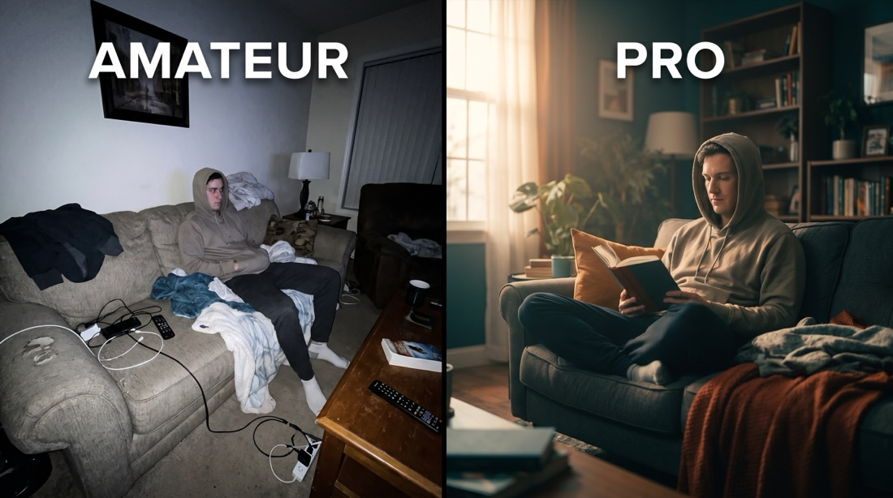
La diferencia entre amateur y profesional casi nunca está en el equipo. Está en decisiones numéricas deliberadas — niveles de audio en dB, temperaturas de color en Kelvin, duraciones de transición en frames — que el ojo percibe aunque no las nombre. Este curso te da esos números.
Cómo leer cada módulo — los 7 componentes
Cada concepto se enseña siempre con la misma "célula": el concepto clásico, su número (📐 valor + cuándo + por qué), el insight invisible (💡), la triple lente IA (🤖 cómo invocarlo por prompt, cómo forzarlo en post, y dónde la IA lo rompe), un prompt reproducible (⌨️), una lámina explicativa (🖼️) y cómo lo aplica nuestro propio sistema (🏠).
Checklist de cierre
El sustrato técnico invisible
Framerate, obturación 180°, exposición, aspect ratio y profundidad de campo: los parámetros que definen el "look" ANTES del encuadre, la luz o el color. En un flujo con IA no se capturan con una cámara — se invocan por prompt o se fuerzan en post.
Al terminar este módulo vas a poder
- Explicar por qué 24fps + obturador 180° producen "look cine" y qué pasa cuando los tocas mal.
- Balancear la exposición en stops y controlar profundidad de campo y bokeh como palancas independientes.
- Elegir el aspect ratio como decisión narrativa, no como contenedor del dispositivo.
- Traducir cada uno de estos estándares a un prompt para modelos de video/imagen y a un fix en ffmpeg/Resolve.
El "look" nace antes del encuadre
Antes de decidir dónde pones la cámara, qué iluminas o cómo gradúas el color, ya tomaste cinco decisiones que el espectador siente aunque no sepa nombrarlas: a cuántos fotogramas por segundo se mueve la imagen, cuánto rastro deja cada movimiento, cuánta luz entra, qué forma tiene el cuadro y qué está nítido. Ese es el sustrato técnico: invisible para el amateur, decisivo para el resultado.
En cine se capturan con una cámara física. En un flujo con IA no existe ese sensor: estos parámetros se invocan por prompt (framerate, motion blur, DOF, aspecto, óptica) o se fuerzan en post (conform de framerate, letterbox, desqueeze, grado de blur). Por eso conviene entender el estándar físico primero: es lo que le pides al modelo con lenguaje, y lo que corriges cuando el modelo no lo entrega.
Obturación 180°: la firma del "look cine"
Viene del obturador rotatorio del cine en película: un disco con una abertura angular gira una vez por fotograma; el ángulo de esa abertura define qué fracción del frame se expone. La cámara digital no tiene disco, pero emula la misma fracción. La consecuencia que casi nadie ve: el ángulo controla la cantidad de motion blur por frame, que es exactamente lo que separa "cine" de "video/telenovela".
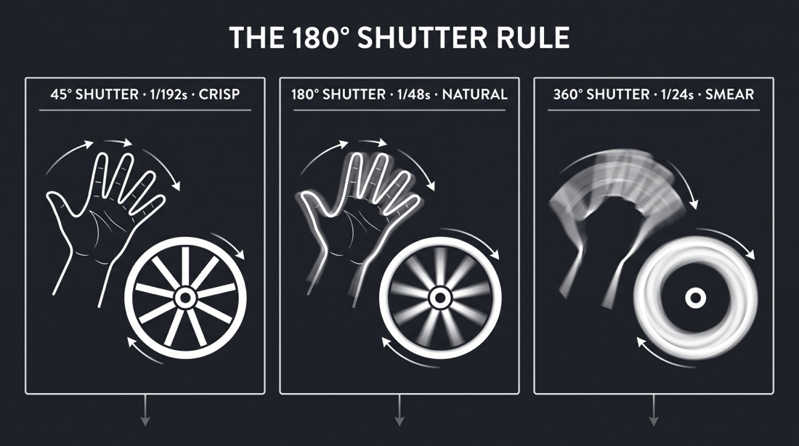
En fotografía, el obturador es una herramienta legítima de exposición. En cine cambia de rol: queda clavado a 180° por el look y NO se toca para exponer — la exposición se balancea con apertura, ISO, ND y luz. El amateur mueve el shutter para "oscurecer" y destruye el motion blur sin entender por qué el resultado "se ve raro / videoso". Nadie te avisa que el mismo control tiene dos trabajos distintos según el medio.
Framerate: fluidez no es calidad
El framerate es la resolución temporal de la imagen. La intuición de consumidor ("más fps = más suave = mejor", como en gaming o TV) es justamente la trampa: en narrativa, lo demasiado fluido lee como barato.
Para cámara lenta suave se hace overcrank: se graba a 48/60/120/240fps y se conforma (reproduce) a 24fps — 120→24 estira el tiempo 5× con fluidez, sin la interpolación artificial de "ralentizar en post". Y la trampa que casi nadie recuerda: la regla 180° hay que recalcularla al framerate de captura. A 120fps el obturador correcto es 1/240s, no 1/48s. Si lo dejas igual, el slow-mo sale con demasiado blur o demasiado poco.
ffmpeg -i in.mp4 -r 24 -vf "fps=24" out.mp4. Si el movimiento salió demasiado nítido/videoso, agrega motion blur sutil en Resolve (nodo Motion Blur) o con minterpolate+tblend. Para slow-mo sin saltos: minterpolate=fps=120:mi_mode=mci,setpts=5*PTS.Cinematic 24fps film look, natural 180-degree shutter motion blur, medium shot of a woman turning her head, subtle handheld movement, shallow depth of field, Kodak Vision3 film grain, no soap-opera smoothness
Exposición: todo se mide en "stops"
La exposición es función de tres ejes: ISO (sensibilidad), apertura (cuánta luz entra) y obturador (cuánto tiempo). La luz se percibe de forma logarítmica, así que se mide en stops: una moneda común que conecta tiempo, área y sensibilidad. La clave de cine: como el obturador está clavado a 180°, la exposición se balancea SOLO con apertura, ISO y luz/ND.
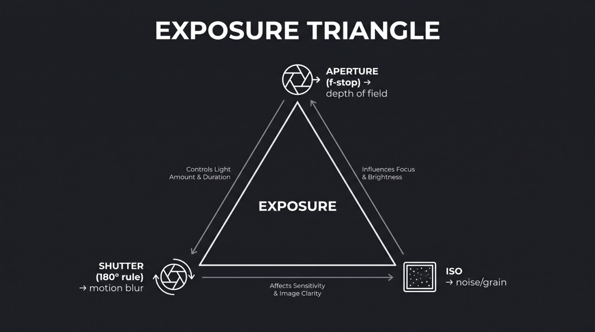
El rango dinámico total del marketing (ej. 17 stops) no es la latitud usable (ej. 12–13 stops): el margen real para sub/sobre-exponer y recuperar limpio es bastante menor que la cifra del brochure. Y hay un ISO "privilegiado": exponer al ISO nativo/base (800 en Alexa) y controlar la luz con filtros ND al aire libre — no subir ISO — es lo que preserva el rango dinámico. Subir ISO "gratis" cuesta sombras o ruido.
f-stop vs T-stop: por qué no saltan los cortes
El f-stop es un valor geométrico (focal ÷ diámetro de pupila de entrada). El T-stop es el valor medido de transmisión real de luz, descontando lo que el vidrio absorbe o refleja. Un lente f/2.0 puede ser T2.2 en la práctica. Los lentes de cine se marcan y se cortan en T-stops.
Los lentes de foto solo muestran f-stops, así que la existencia misma del T-stop — y su razón, la consistencia al cortar — es un mundo que no aparece hasta que trabajas con óptica de cine. El amateur asume que f/2 = f/2 en todo lente y ve saltos de exposición al cortar entre planos. Dos lentes a "T2.0" dan exactamente la misma exposición; dos a "f/2.0" pueden no darla.
Profundidad de campo y bokeh: cantidad ≠ calidad
La profundidad de campo (DOF) es la zona de nitidez aceptable delante y detrás del plano de foco. Depende de cuatro palancas independientes: apertura, distancia de foco, focal y tamaño de sensor. El bokeh es otra cosa: la calidad estética del desenfoque (forma de las luces, suavidad), no la cantidad. Es el diferenciador visual #1 entre "cinematográfico" y "video de teléfono".
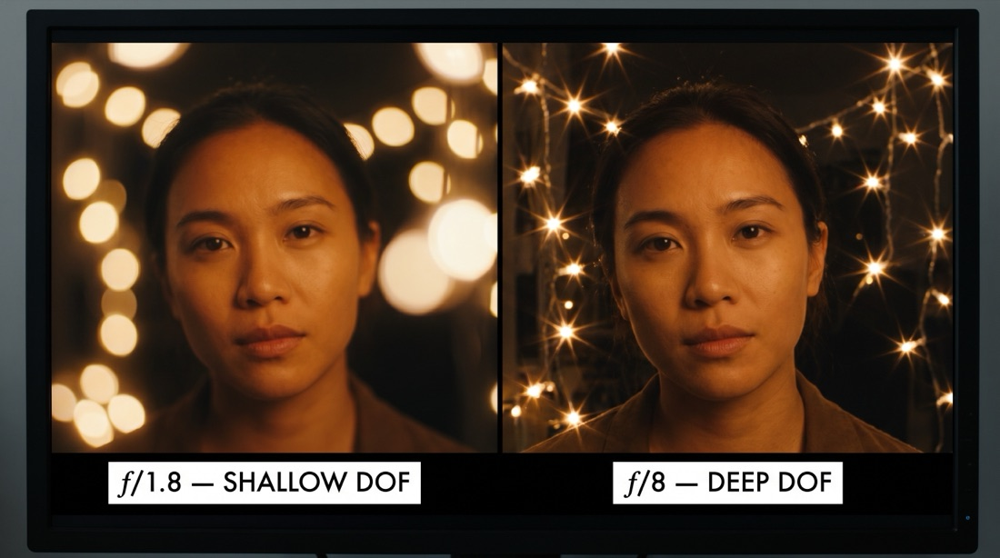
El discurso popular ("modo retrato", "fondo borroso") colapsa dos cosas distintas en un solo deseo. Puedes tener un fondo muy borroso pero feo (bokeh nervioso / anillo de cebolla) o un desenfoque moderado pero cremoso. Sin el vocabulario para pedir la CALIDAD del desenfoque — no solo la cantidad — nunca vas a saber por qué tu "fondo borroso" no se ve como el de la película.
85mm portrait lens at T1.5, extremely shallow depth of field, subject in sharp focus, background melted into creamy circular bokeh, soft out-of-focus highlight orbs, full-frame sensor look, cinematic --ar 9:16
Crop factor: por qué el teléfono "enfoca todo"
El factor de recorte compara la diagonal de un sensor con la del full frame (43.27mm). Multiplica la focal para dar el campo de visión equivalente y afecta la profundidad de campo aparente al mismo encuadre. Es lo que explica por qué el mismo lente "se ve más cerrado" en cámaras distintas.
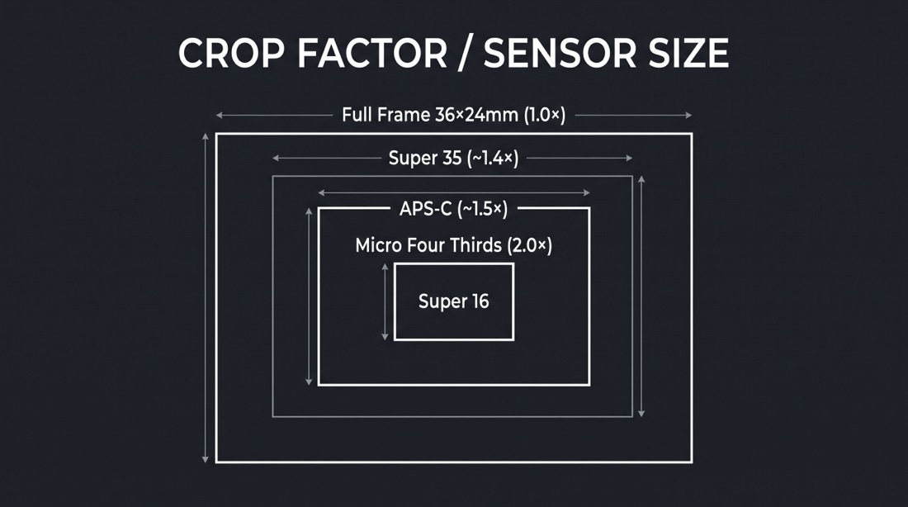
Un sensor más chico da MÁS profundidad de campo a igual apertura — por eso el teléfono "enfoca todo" y cuesta tanto desenfocar el fondo. Para igualar el desenfoque de full frame en Super 35 hay que abrir ~1.4 stops más. El amateur cree que f/2.8 "desenfoca igual" en cualquier cámara; la dependencia del tamaño de sensor es invisible sin el marco del crop factor.
Aspect ratio: la forma del cuadro es lenguaje
La proporción ancho:alto no es solo técnica. 2.39:1 (scope) evoca épica, paisaje y aislamiento horizontal; 1.85:1 (flat) es el estándar teatral neutro; 4:3 evoca época, claustrofobia y nostalgia; 9:16 es nativo mobile; 1:1 es feed. Directores cambian de ratio DENTRO de un film (Grand Budapest, Mommy) como recurso dramático. Elegir mal el ratio comunica el género equivocado antes del primer corte.
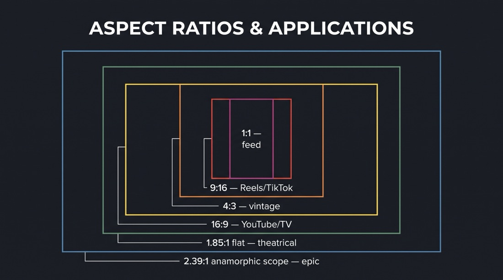
El amateur toma el aspecto que le da el dispositivo o la plataforma como un dato inmutable, sin concebirlo como decisión autoral. Pero cambiar de 4:3 a scope dentro de un film — o elegir 2.39 vs 1.85 — comunica género y emoción antes del primer diálogo. La forma del cuadro habla antes que la historia.
--ar 9:16, --ar 21:9). Para evocar scope real: "cinematic 2.39:1 composition, anamorphic widescreen, horizontal blue lens flares, oval bokeh". El aspecto se decide en generación cuando puedes.crop=iw:iw/2.39,pad=iw:ih:(ow-iw)/2:(oh-ih)/2:black. Para el pipeline de este sistema (Reels) el nativo es 9:16 (1080×1920) — no se le aplica letterbox de scope.--ar 9:16 para Reels) y compón pensando en la safe zone desde la anchor, no después.9:16, 1080×1920, H.264 High profile L4.0 yuv420p, AAC-LC stereo 48000 Hz, 30 fps (o 60 si el contenido es action-heavy), bitrate video 3–5 Mbps (target ~4 con CRF 18). El aspect ratio y los codecs no se improvisan por video — están fijados en ai-video-production/formats/reel.md. Ojo con el eje framerate: aquí el estándar de entrega es 30fps, no los 24fps del "look cine" teatral; el look cinematográfico se sostiene por el motion blur y el color, no por el framerate.audit-ui-safe-zones.py antes del render (Hard Rule #4), leyendo las bandas empíricas — nunca hardcodeando la Y. Compón la imagen dejando esas zonas despejadas desde la anchor.✅ Haz
- Fija el obturador a 180° y balancea la exposición con apertura/ISO/ND.
- Pide el look en lenguaje ("24fps", "180-degree motion blur", "no soap-opera smoothness") y corrige el framerate en conform.
- Nombra focal + T-stop + calidad de bokeh en la anchor, no solo "fondo borroso".
- Genera directo en el aspect ratio de destino (9:16 para Reels) con las safe zones despejadas.
- Recalcula la regla 180° al framerate de captura cuando hagas slow-mo (120fps → 1/240s).
❌ Evita
- Mover el shutter para exponer: mata el motion blur y ensucia el look.
- Asumir que "más fps = mejor": 48/60fps en narrativa = soap opera effect.
- Confundir cantidad de desenfoque (DOF) con calidad del desenfoque (bokeh).
- Creer que f/2.8 "desenfoca igual" en cualquier sensor (ignora el crop factor).
- Generar en 16:9 y recortar a 9:16 después, perdiendo composición y safe zones.
Checklist de cierre
La cadena de IA y la anatomía del prompt
Este es el módulo-columna. Acá viven las herramientas que ejecutan todo lo que enseñan los demás módulos: los modelos de imagen y video, el prompt cinematográfico de 5 bloques, el control de cámara y la consistencia de personaje. Es el "cómo" transversal — la mano que aprieta el gatillo de cada decisión creativa.
Al terminar este módulo vas a poder
- Escribir un prompt de 5 bloques con oraciones atómicas, focal + apertura y luz motivada — no una descripción corrida.
- Elegir el modelo de video correcto según su duración real, si trae audio nativo y qué tipo de control ofrece.
- Separar la generación de imagen (donde controlas composición y personaje) de la animación i2v (donde solo controlas movimiento) — la disciplina central del pipeline.
La cadena: imagen primero, movimiento después
Toda producción seria separa dos trabajos que el amateur confunde en uno. Primero se genera la imagen fija (el anchor) con Gemini, Midjourney o Flux — ahí controlas con precisión la composición, el personaje, el encuadre y el color. Después esa imagen se anima con un modelo de video en modo i2v (image-to-video), que solo agrega movimiento. Pedirle a un modelo de texto-a-video (t2v) que invente todo de una sola pasada produce deriva de identidad y encuadres impredecibles. El amateur pide "un video de X"; el profesional genera el frame y luego lo anima.
Sobre esa cadena se apoya el resto del curso. Y el idioma con el que se la dirige es el prompt: no una frase suelta, sino una estructura.
La anatomía del prompt: 5 bloques
Un prompt premium se arma con cinco bloques obligatorios, cada uno cubriendo un eje de control distinto. El modelo asigna cada oración a su eje en vez de promediar una descripción corrida — por eso se escriben en oraciones atómicas separadas (sujeto en una, cámara en otra, luz en otra). El principio nace de la guía de Veo pero aplica transversalmente a Kling, Seedance y Gemini imagen.
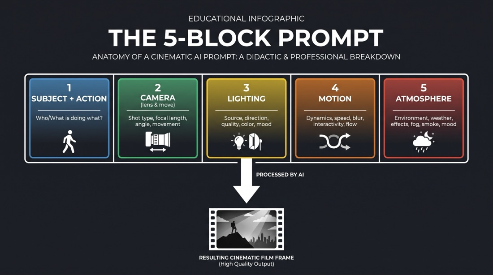
Los prompts de imagen a Gemini deben ser frases descriptivas, nunca prefijos-etiqueta tipo POV: / ANGLE: / LIGHT: warm. El modelo no distingue metadata de contenido: renderiza esas palabras como texto quemado flotando sobre la escena. El amateur estructura el prompt como formulario porque "parece prolijo" y arruina la imagen sin entender por qué.
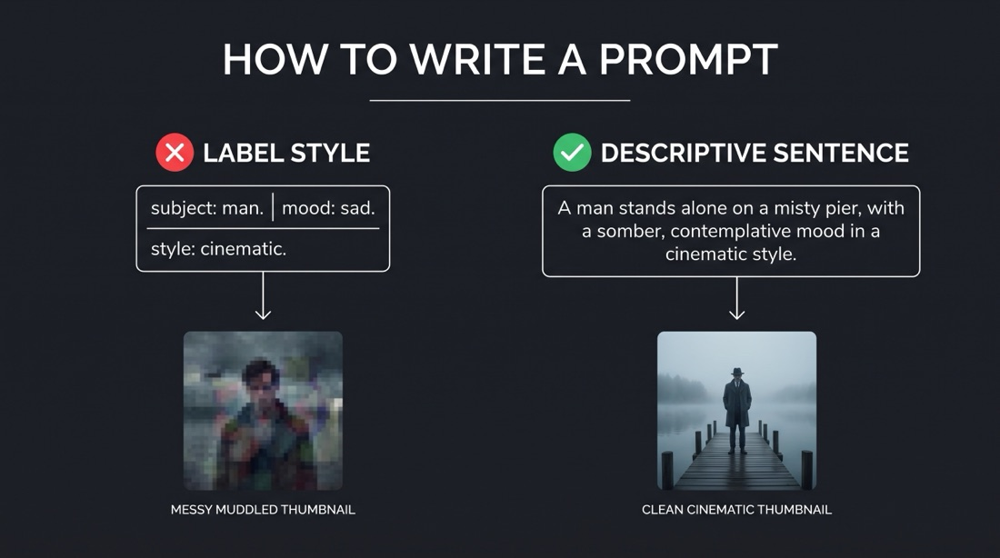
POV shot, first person, my own hands gripping a rusted iron gate at dusk, abandoned stone courtyard beyond, warm amber key light from the left, deep shadows, shallow depth of field, 85mm lens look, cinematic film grain, vertical 9:16 framing
El zoológico de modelos de video: elige por límite real
No hay un "mejor modelo": hay el modelo correcto para cada plano, y se elige por tres variables que los tutoriales rara vez enfrentan — duración real del clip, si genera audio nativo, y qué tipo de control ofrece (keyframes, tokens de cámara, multi-shot, referencias). Los estándares de abajo son el mapa.
Kling 2.5, Hailuo 02 y Seedance 1.0 no generan audio. Solo Veo 3/3.1 y Kling 2.6+ traen banda sonora nativa. El amateur ve "video generado" y asume que incluye sonido, o mezcla clips con y sin audio sin notarlo. Con modelo silencioso hay que muxear narración / SFX / música por clip (ensamblaje atómico); asumir audio inexistente desincroniza todo el timeline. Hay que consultar la capability antes de diseñar el pipeline de audio.
La narración de un shot debe caber calculada al ritmo canónico (~165 WPM), no al techo físico de inteligibilidad del TTS (~280 WPM). Si palabras/165×60 > duración del clip, la narración se trunca aunque "técnicamente entre" comprimida. El amateur chequea que el texto quepa hablando rápido y cree estar bien; el TTS se genera a 165 y sale más largo que el clip, cortando la última frase. Fue el bug raíz V5 del sistema, codificado como Hard Rule #29.
MODEL-BENCHMARK.md: hook viral de los primeros 30s → Kling 2.5 Turbo Pro; motion narrativo ≥30s → Hailuo 02 (Std 768p budget / Pro 1080p hero); storyboard de imagen → Gemini Nano Banana. Y la regla de ajuste (HR#28/#29): narración_dur = palabras/165×60 ≤ min(duration_intent, clip_max_s) del modelo — se valida con audit-spec-narration-fits-duration.py antes de generar. Cada modelo declara sus límites en MODEL-CAPABILITIES-MATRIX.md; los tres roles del triángulo lo consultan antes de producir.A lone figure stands at the end of a foggy corridor. [Dolly in, Pedestal up] The fluorescent tubes flicker overhead, cold blue light, 35mm lens, shallow depth of field.
Keyframing i2v: dictar el destino en vez de rezar
El modo i2v se condiciona con el primer frame (start_image) y opcionalmente el último (end_image); el modelo interpola el movimiento entre ambos. Es la única forma de garantizar continuidad pixel-perfect al encadenar planos: el end_image del clip N pasa a ser el start_image del clip N+1. Sin esto, unir clips produce saltos de identidad y de posición.
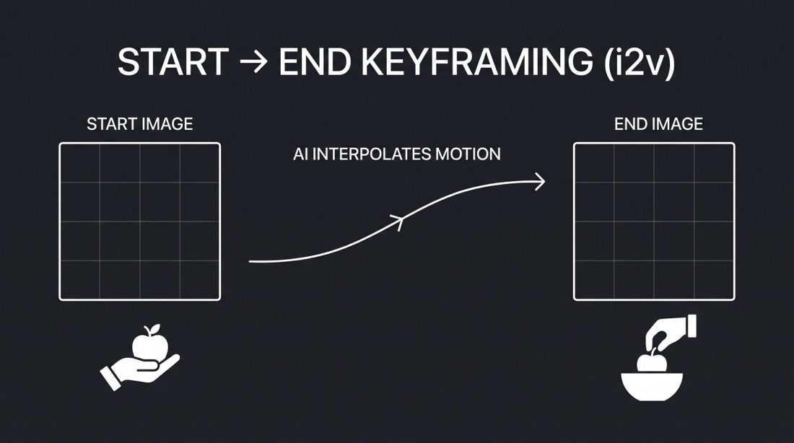
start_image. Dicta el destino con end_image. Kling 2.5 y Luma Ray3 (hasta 16 keyframes) soportan start/end; controla la cámara con tokens [command] (Hailuo) o lenguaje direccional (dolly in, crane down, whip pan) que Gen-4 obedece.clip_real_s.start_image: shot03_frameA.png end_image: shot03_frameB.png Slow push-in toward the gate, ultra-slow motion (2-3s), the hands tighten their grip, dust drifting in the amber light, camera locked POV. negative_prompt: talking, lips moving, fast head turn, warping hands
Consistencia de personaje: el problema históricamente irresuelto
Mantener la misma cara, vestimenta y proporciones a través de planos fue el gran talón de Aquiles del video IA. En 2026 hay cuatro mecanismos vigentes: Runway Gen-4 References (hasta 3 imágenes, ~85% de consistencia desde una frontal), Midjourney v7 Omni Reference (--oref, que reemplaza al viejo --cref), Flux.1 Kontext (edición en contexto que preserva el sujeto turno-a-turno) y el face-coupling de Gemini (la identidad se propaga vía la cara del anchor). El oficio está en alimentar bien la referencia.
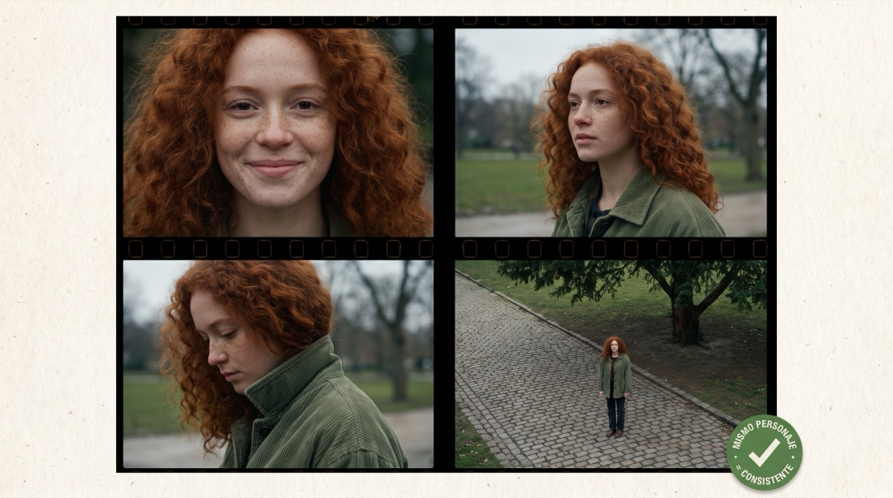
--ref (face-coupling de Gemini), o como referencia de Gen-4, o vía --oref en Midjourney v7. Puedes variar pose, ángulo, luz y expresión; no cambies cara, build, edad ni ropa principal dentro del mismo video.image.py: usa el SDK google-genai con model="gemini-3.1-flash-image-preview", declara response_modalities=["TEXT","IMAGE"] y pasa aspecto/tamaño vía types.ImageConfig (--size {512,1K,2K,4K} default 1K, --aspect default 9:16). Las referencias van con --ref (repetible para multi-personaje): se ensamblan como [ref_1, …, prompt] — refs primero, prompt al final. Ojo: el HORROR_SUFFIX no se aplica por default (el script es agnóstico); para paletas cool/clínicas se usa --no-mono-suffix + bloque de estilo propio.✅ Haz
- Genera el frame primero (Gemini/MJ) y anímalo i2v — nunca t2v a ciegas.
- Escribe el prompt en oraciones atómicas y empareja focal + apertura.
- Usa un anchor frontal 1024×1024, luz pareja, expresión neutra, generado primero.
- Calcula la narración a 165 WPM contra la duración REAL del clip antes de generar.
- Consulta si el modelo trae audio nativo ANTES de diseñar el post.
❌ Evita
- Pedir "un video de X" en t2v y esperar composición controlada.
- Prefijos-etiqueta (
POV:,ANGLE:) en prompts de Gemini → texto quemado. - Copiar recetas con
--crefen Midjourney v7 (ignorado en silencio). - Calcular el timeline con enteros (5.0/6.0) en vez de las duraciones reales.
- Asumir que el clip trae audio cuando el modelo es silencioso.
Checklist de cierre
Composición y encuadre
Dónde poner al sujeto en el cuadro y por qué: tercios, phi, aire de mirada, dónde NO cortar el cuerpo, y cómo cambia todo según el aspect ratio.
Al terminar este módulo vas a poder
- Colocar los ojos de un sujeto sobre la línea de tercios (o phi) y resolver el headroom por reflejo, no por tanteo.
- Dejar el aire de mirada del lado correcto y reconocer al instante un encuadre "apretado" o amputado por un corte de cuerpo mal puesto.
- Rediseñar (no recortar) la misma escena para 2.39:1, 16:9 y 9:16, respetando las safe areas de broadcast y las UI de social.
Encuadrar no es "que entre la persona"
El amateur mira por la cámara y busca que el sujeto quepa. El profesional decide en qué punto exacto del cuadro cae el interés, cuánto vacío deja alrededor y en qué dirección respira la imagen. Componer es distribuir el peso visual dentro de un rectángulo, y ese rectángulo cambia de reglas según su forma. Este módulo va de esas decisiones: dónde va el sujeto, dónde va el aire, dónde nunca se corta un cuerpo, y cómo se reescribe todo al pasar de horizontal a vertical.
Casi todo arranca en una grilla. Divides el cuadro en nueve rectángulos con dos líneas horizontales y dos verticales, y colocas lo importante sobre esas líneas o en sus cuatro cruces —los "strong points"—. En un retrato, los ojos van sobre la línea horizontal superior. Esa sola decisión descentra al sujeto, crea tensión y, de regalo, te resuelve el headroom.
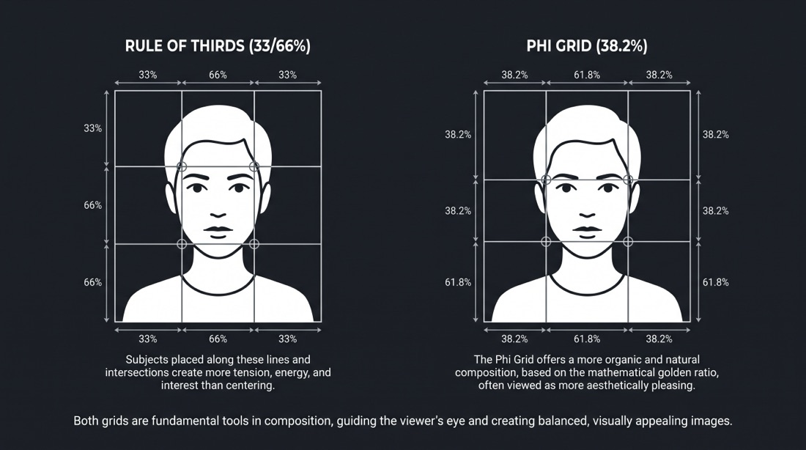
La regla de tercios no es una ley: es una aproximación de la sección áurea. Los directores de fotografía alternan entre tercios (33.3%, más obvio e impactante) y phi (38.2 / 61.8, más natural y sofisticado) según el efecto que buscan. El oficio no es aplicar siempre la misma grilla, sino saber cuál usar. Tratar la regla de tercios como dogma único es la marca del amateur que ni sabe que phi existe.
Headroom: ancla por los ojos, no por la cabeza
El headroom es el espacio entre el tope de la cabeza y el borde superior del cuadro. Si anclas los ojos en el tercio superior, el headroom sale correcto solo: pequeño y constante. El error de amateur número uno es dejar demasiado aire arriba, con el sujeto "hundido" en el cuadro y un espacio muerto que no comunica nada. El headroom se reduce al cerrar el plano y aumenta en planos abiertos —nunca es un valor fijo, es una consecuencia de dónde pusiste la mirada.
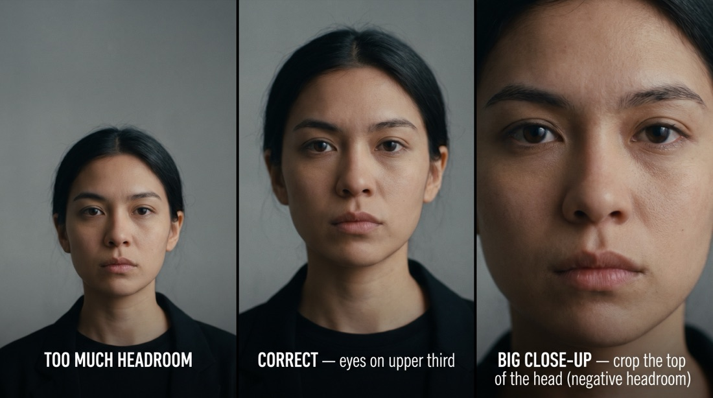
El big close-up puede y debe cortar el tope de la cabeza —headroom negativo— siempre que mantenga los ojos altos. Dejar la cabeza completa en un primerísimo plano es el error inverso: crea aire muerto arriba y aleja emocionalmente. El amateur cree que "siempre tiene que verse toda la cabeza"; el DP sabe que al cerrar el plano el headroom se sacrifica y el punto de anclaje son los ojos.
El aire va adelante de la mirada
Cuando un sujeto mira o se mueve hacia un lado, hay que dejar espacio en esa dirección: es el noseroom / lookroom (aire de mirada) o leadroom (aire de avance). Un perfil que mira a cuadro-derecha se coloca a la izquierda, para que la mirada tenga hacia dónde ir. Si dejas el aire detrás y pegas la cara al borde hacia donde mira, la imagen se siente apretada y parece un error de encuadre. Es una regla direccional y obligatoria, no una preferencia estética —y es de las que la IA rompe más seguido.
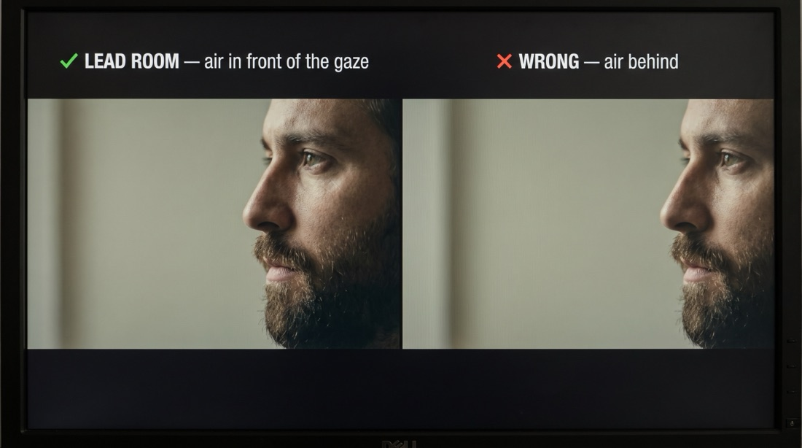
La asimetría del lookroom es direccional: el aire va en la dirección de la mirada o del movimiento, nunca detrás. El amateur centra la cara y no distingue que este vacío no es decorativo sino funcional. Lo mismo con la eyeline en diálogo: hay que respetar el eje de 180° y dejar lookroom coherente entre contraplanos, o los personajes "no se miran".
Cinematic portrait of a weathered fisherman positioned on the LEFT third of the frame, head and eyes on the upper third line, gazing toward frame-right into open negative space, shallow depth of field 85mm f/1.4, soft window light from frame-right, rule-of-thirds composition, 2.39:1 aspect ratio --ar 21:9 --style raw
Dónde NO cortar el cuerpo
Existe una taxonomía de puntos de corte prohibidos, y el ojo profesional los evita por reflejo. Nunca cortes el cuadro sobre una articulación —tobillo, rodilla, muñeca, codo, hombro, cuello, dedos, punta de los pies—: cortar en la junta produce sensación de amputación. Corta siempre entre articulaciones: media pantorrilla, medio muslo, torso, medio brazo, media frente. El amateur encuadra "que entre la persona" sin saber que este mapa existe; una vez que lo ves, no puedes dejar de verlo.
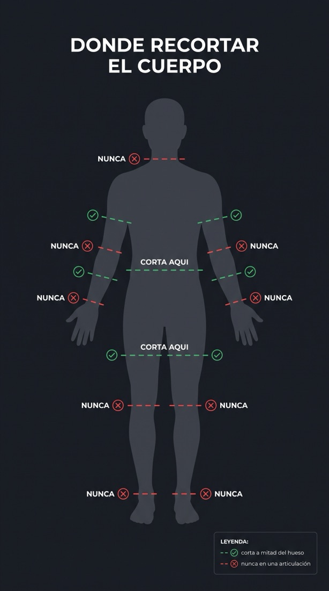
✅ Haz
- Ancla los ojos en el tercio superior y deja que el headroom salga solo.
- Deja el aire del lado hacia donde mira o avanza el sujeto.
- Corta el cuerpo entre articulaciones (medio muslo, torso, medio brazo).
- Rediseña la composición para cada aspect ratio, no la recortes.
❌ Evita
- Demasiado headroom con el sujeto hundido y aire muerto arriba.
- La cara pegada al borde hacia donde mira (aire detrás).
- Cortar sobre tobillos, rodillas, muñecas o cuello (amputación).
- El horizonte al 50%, salvo un reflejo simétrico deliberado.
Profundidad: tres planos, no dos
Un sensor es plano; la composición le devuelve el volumen. Construye el cuadro en tres capas de profundidad: primer plano (un objeto o marco cercano), plano medio (el sujeto) y fondo (donde vive el punto de fuga). El foreground que enmarca es el truco más rápido para dar tridimensionalidad: un objeto cercano desenfocado en el borde convierte una imagen chata en un espacio con dimensión. El amateur solo piensa en sujeto y fondo —dos planos—; el pro compone el primer plano como una capa activa. Las leading lines (caminos, rieles, paredes, luz) refuerzan el recorrido llevando el ojo hacia el sujeto o el punto de fuga sin que el espectador lo note.
Three-layer depth composition: FOREGROUND out-of-focus green leaves framing the left edge, MIDGROUND a young woman in red coat sharp on the right third looking frame-left, BACKGROUND a misty forest path receding to a vanishing point, telephoto compression 135mm, overcast diffused light, strong depth separation --ar 16:9
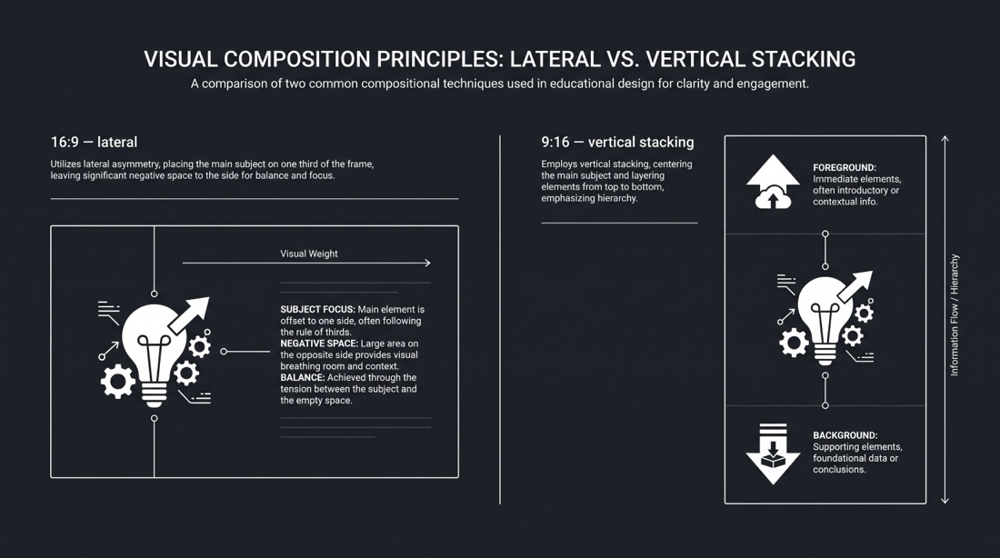
El aspect ratio reescribe la composición
Cambiar de formato no es recortar el mismo plano: cada ratio exige una composición nueva. El 16:9 (1.778:1) premia la asimetría lateral —sujeto a un tercio, aire respirando al otro—. El scope anamórfico 2.39:1 la exagera: composición horizontal fuerte, varios sujetos posibles y mucho negative space lateral. El 9:16 (0.5625:1) la invierte por completo: casi todo vive sobre el eje central, el ojo escanea de arriba a abajo, el headroom vertical es escaso y el horizonte se vuelve dominante. Diseñas vertical, no lateral. Por eso no se puede reencuadrar un plano de cine a un Reel sin rediseñarlo.
No puedes recomponer el mismo encuadre entre ratios: hay que rediseñarlo. El amateur cree que basta con recortar el mismo plano a otro formato; el pro sabe que 16:9 premia la asimetría, 2.39:1 la exagera y 9:16 la invierte hacia el eje central y el escaneo vertical. Un plano pensado para cine, recortado a Reel, pierde su composición entera.
Vertical 9:16 handheld shot, a chef centered on the vertical axis plating a dish on a counter in the lower third, steam rising through the upper two-thirds as negative space, top-down soft kitchen light, shallow focus, subject eyes on upper-third line, leave clean space top and bottom for on-screen text --ar 9:16
Safe areas: el borde no es tuyo
El borde del cuadro no es confiable. Muchos televisores todavía aplican ~4% de overscan y recortan la señal; y en social la UI de la app come mucho más que cualquier overscan. Por eso hay dos rectángulos concéntricos: la Safe Action Area (93% del cuadro) para todo lo que debe verse completo, y la Safe Title Area (90%, más adentro) para todo el texto —captions, lower-thirds, logos—. El texto en el borde es lo primero que se pierde.
Las safe areas cambiaron con la era de los paneles planos: el viejo 80% título / 90% acción de los CRT quedó obsoleto en 2009 con SMPTE ST 2046-1 (90% / 93%). Usar plantillas viejas del NLE desperdicia pantalla; y para vertical, ni siquiera el 90% SMPTE alcanza —la barra inferior de la UI ronda los 250 px y la superior ~220 px sobre 1080×1920, así que el texto crítico va aún más adentro, al centro-alto. Ese margen depende de la app exacta y cambia con cada update: verifica contra el safe-zone template vigente, no asumas un valor fijo.
ffmpeg -i in.mp4 -vf "drawbox=x=iw*0.035:y=ih*0.035:w=iw*0.93:h=ih*0.93:color=yellow@0.8:t=2,drawbox=x=iw*0.05:y=ih*0.05:w=iw*0.90:h=ih*0.90:color=red@0.8:t=2" -c:a copy safe_check.mp4
ai-video-production/formats/reel.md, y el gate audit-ui-safe-zones.py las verifica leyendo las bandas empíricas —no hardcodea el Y— antes de aprobar cualquier render. Compón el sujeto sabiendo dónde va a caer la UI.Checklist de cierre
Planos, ángulos y movimiento de cámara
El vocabulario de la cámara: tamaños de plano, ángulos, movimientos y distancias focales — cada uno con su efecto psicológico — y las reglas (180°, 30°) que evitan que un corte desoriente. Cuando lo generas con IA, este es el idioma exacto que los modelos entienden: "extreme wide shot", "85mm", "low angle", "dolly in, not zoom".
Al terminar este módulo vas a poder
- Elegir el tamaño de plano y el ángulo correctos para la emoción que buscas — y encuadrar el cuerpo sin "amputarlo".
- Distinguir dolly de zoom, y focal larga de gran angular, para escribir prompts que produzcan la perspectiva que quieres.
- Montar cobertura sin jump cuts ni desorientación aplicando las reglas de 180° y 30°.
- Traducir todo eso a prompts de Kling/Veo/Runway y saber exactamente dónde la IA rompe la gramática de cámara.
La escala de planos: la unidad atómica de la narración visual
Todo empieza por decidir cuánto del sujeto llena el cuadro. Esa decisión — la escala del plano — controla la distancia emocional del espectador antes de que se diga una sola palabra. De más lejano a más cercano: ELS/EWS (extreme long/wide, la figura diminuta y el entorno domina), LS/WS (long/wide, cuerpo entero con algo de aire), MLS o plano "cowboy"/americano (corte a media pierna), MS (medium, de la cintura para arriba), MCU (medium close-up, pecho y hombros), CU (close-up, la cara llena el cuadro), ECU/BCU (solo ojos y boca) y el Insert (un detalle no facial: un reloj, una mano).
La convención clásica: abrir con un establishing/master (LS) para dar geografía, y acercarse al CU en los picos emocionales. Saltarse escalones de escala al azar se lee como jump cut — sobre eso volvemos con la regla de los 30°.
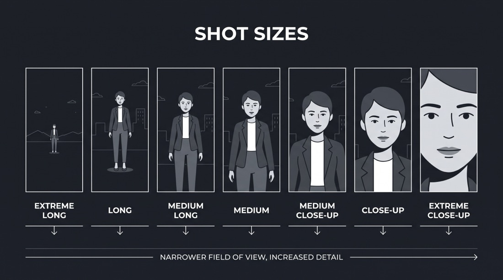
Dónde cortar el cuerpo: la línea que separa profesional de aficionado
Este es el detalle que, una vez que lo ves, ves en todo video amateur. El borde inferior del cuadro nunca va sobre una articulación.
Un encuadre cortado en la rodilla "no se ve tan mal" hasta que conoces la regla; después detectas el torso flotante en cualquier grabación casera. Nadie lo enseña de forma espontánea porque el ojo no entrenado no lo aísla como error — solo siente que "algo queda raro" sin poder nombrarlo.
Headroom y lead room: los ojos van en el tercio superior
El error número uno del principiante es dejar demasiado aire sobre la cabeza. El instinto de "centrar la cabeza" hunde al sujeto y desperdicia el cuadro. La regla contraintuitiva pero universal: colocar los ojos sobre la línea del tercio superior, no la cabeza centrada.
Ángulos de cámara: jerarquía de poder sin diálogo
El ángulo vertical no es decorativo: codifica poder y estado psicológico. Eye-level (a la altura de los ojos del sujeto) es neutral, un par. Picado (high angle, cámara arriba mirando abajo) empequeñece y vuelve vulnerable. Contrapicado (low angle, cámara abajo mirando arriba) da poder, amenaza, dominio. Los extremos: cenital/bird's-eye (90° desde arriba) y worm's-eye (desde el piso). Y el ángulo holandés (horizonte inclinado) para tensión y desorientación.
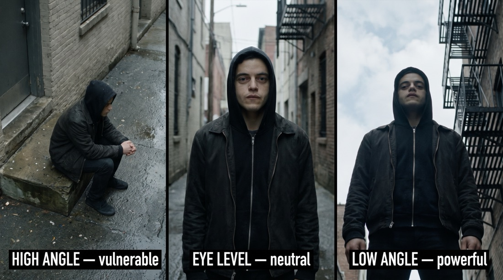
El picado y el contrapicado se usan emparejados en un diálogo de poder: contrapicado al dominante, picado al sometido, dentro de la misma escena. La lectura de jerarquía emerge del contraste entre los dos planos, no de un ángulo aislado. El amateur elige un ángulo "porque se ve cool"; el profesional los piensa como un sistema de dos planos que dialogan.
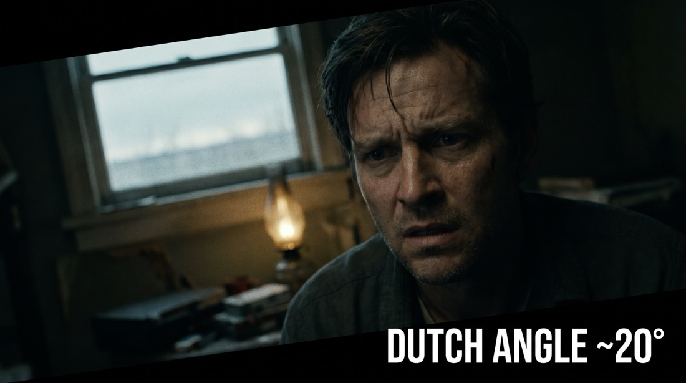
Distancia focal: la lente no "acerca", cambia la perspectiva
Este es el unknown-unknown clásico. La distancia focal no acerca al sujeto: cambia la relación figura-fondo y la deformación de la perspectiva. Con gran angular desde cerca, lo cercano se agranda (nariz grande, "cara de hacha") y el fondo se aleja. Con teleobjetivo desde lejos, el rostro se aplana (favorecedor) y el fondo parece más cerca y grande. Y el dato que casi nadie explica: la compresión la determina la distancia cámara-sujeto; la focal solo decide cuánto tienes que alejarte para llenar el cuadro.
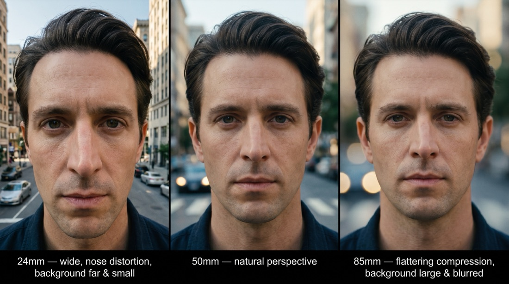
Todos aprenden "el tele acerca", pero lo que realmente hace es cambiar la perspectiva a través de la distancia de trabajo. Por eso el aficionado no entiende por qué su retrato con gran angular deforma la nariz: la culpa no es de "estar cerca", es de la perspectiva exagerada que la distancia corta impone. Si quieres un rostro favorecedor, aléjate y usa focal larga; si quieres inmersión ansiosa, acércate con gran angular.
Close-up, 85mm lens, shallow depth of field, a woman's face fills the frame as her expression shifts from hope to fear, softly compressed blurred background, eyes on upper third, subtle catchlight, no camera movement, cinematic
Dolly vs zoom: opuestos emocionales, no sinónimos
El aficionado pide "acércate" pensando que zoom equivale a dolly. No lo son. El dolly traslada físicamente la cámara: cambia el paralaje (el fondo se desplaza respecto al sujeto), da tridimensionalidad, el mundo se abre alrededor. El zoom solo cambia la focal: recorta y aplana, sin paralaje, y se siente mediado y artificial. En una pantalla ambos "agrandan al sujeto", así que sin entrenamiento parecen lo mismo — la diferencia se nota solo cuando la ves lado a lado.
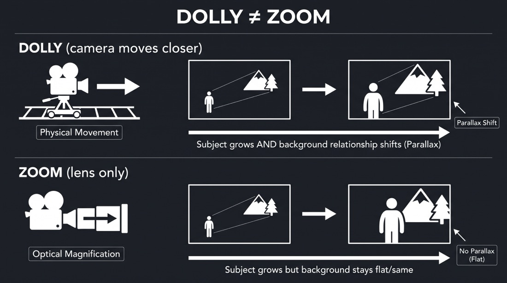
Medium close-up, 50mm lens, slow subtle push-in — camera physically dollies closer to a man realizing a terrible truth, background parallax shifts as we approach, motivated psychological move, dolly not zoom, shallow focus, cinematic, 24fps
El dolly zoom (efecto Vertigo): el sujeto queda, el mundo se deforma
El movimiento más marcado del vocabulario, inventado por Irmin Roberts para Vertigo (1958). Dolly y zoom en direcciones opuestas, a velocidades acopladas, para que el sujeto mantenga el mismo tamaño mientras el fondo cambia radicalmente de perspectiva. Dolly out + zoom in = el mundo se expande/aleja (vértigo, terror que se acerca). Dolly in + zoom out = el fondo se aplasta encima. El cerebro no puede reconciliar la distorsión espacial: puro desasosiego. Se usa típicamente una vez por película.
Movimiento motivado, no mareo gratuito
Todo movimiento de cámara debe tener una motivación: física (seguir a un sujeto), narrativa (revelar información) o psicológica (marcar un cambio emocional, como un push-in lento en una revelación). El principiante mueve la cámara "para que no sea estático", sin darse cuenta de que el movimiento sin propósito llama la atención sobre sí mismo y saca al espectador de la historia. El repertorio: pan y tilt (sobre eje fijo), dolly/truck/pedestal (traslaciones), handheld (crudo, nervioso), steadicam/gimbal (fluido estabilizado), crane/jib (barridos reveladores) y whip pan (transición violenta).
Orbiting camera, circular dolly around subject, 35mm lens, a warrior standing still as the camera arcs 180 degrees around him, dust in the air, low angle looking up, dramatic side light, smooth gimbal motion, cinematic
video-animation/ANIMATION-LAYER.md § 4: el movimiento de cámara es más controlable que el de sujeto, una sola acción principal por prompt, y movimientos lentos y deliberados (los rápidos quedan crudos). Ojo con un fallo conocido — "camera shakes" Kling no lo interpreta como cámara; el shake se hace en post con GSAP (microShake ~6 Hz, ±2px). Además, el motion narrativamente importante debe ocurrir cuando el narrador lo dice: si la acción está a los 2.5s del clip, data-start del video = T_frase − 2.5s.Ken Burns: el piso, no el techo
Cuando un plano es estático, igual necesita respirar. En nuestro sistema ningún plano estático puede quedarse quieto más de 2 segundos sin algún motion. El mínimo es un Ken Burns sutil.
La regla de los 180°: el eje de acción
Entre dos sujetos (o en la dirección de un movimiento) existe una línea imaginaria: el eje de acción. La cámara debe permanecer siempre del mismo lado de esa línea. Si A está a la izquierda mirando a B a la derecha, esa relación se mantiene en todos los cortes. Cruzar la línea invierte las miradas y desorienta: de golpe los dos personajes parecen mirar al mismo lado, o un jugador corre en dirección contraria. Es la regla de continuidad espacial más fundamental del montaje.
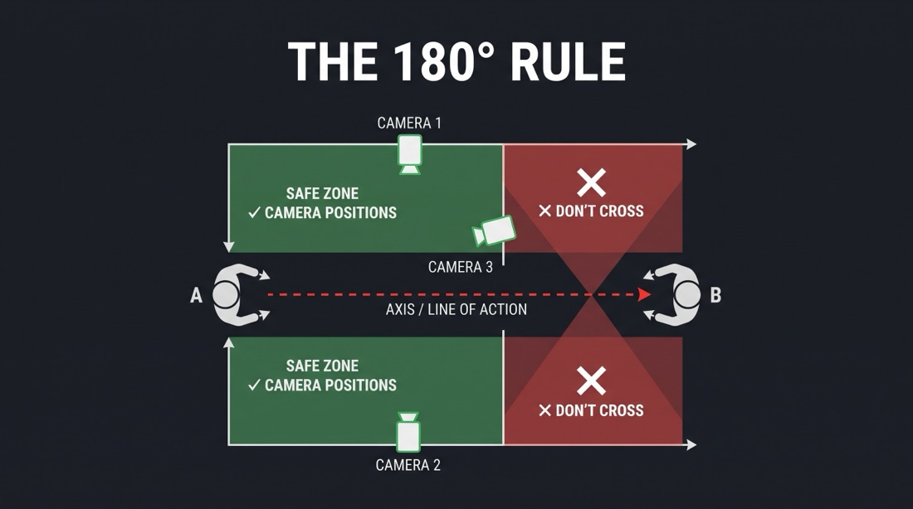
El eyeline match y la altura de mirada son independientes del 180°: puedes respetar el eje y aun así romper la ilusión si las miradas no se aparean en altura. Si A es más alto que B, A debe mirar ligeramente abajo y B ligeramente arriba; si ambos miran recto, los singles no se sienten "en la misma habitación" aunque el eje esté perfecto. Es una capa más fina que casi nadie oye nombrar, y falla de forma invisible: sientes que algo no cierra sin poder decir qué.
--ref) y con el lado del eje escrito en cada prompt; nunca asumas que el modelo "recuerda" la escena anterior.Cómo lo aplicamos: variante = tipo de plano, no framing
Toda esta gramática aterriza en una regla operativa nuestra que evita el efecto "PowerPoint narrado". Cuando una escena necesita variedad, no se varía la distancia o el ángulo de la misma toma: se cambia el tipo de plano (wide, medium, close-up de rostro, close-up de detalle, lateral, picado, contrapicado, POV de manos), manteniendo constantes escenario, personajes, paleta e iluminación.
ai-video-production/IMAGE-VARIETY.md (Hard Rule #5): escenas ≤4s = 1 imagen; 4–8s = 2 variantes; >8s = 3; >15s = 4–5 planos distintos. Las variantes se generan con image.py --ref <anchor> para conservar identidad. El caso que lo enseñó: mina-abandonada agregó variantes hasta 23 imágenes para romper la repetición de POV — y en vez de resolverlo lo fragmentó (~4.3s por imagen, la mitad no animables). La solución correcta fue menos imágenes (12–15) con tipos de plano distintos. Gemini no lo detectó; el ojo humano sí ("varias imágenes diferentes pero iguales").✅ Haz
- Abrir con un establishing (LS) y acercarte al CU en los picos emocionales.
- Cortar el cuadro en el medio del hueso; poner los ojos en el tercio superior.
- Nombrar la escala, el ángulo y la focal de forma explícita en cada prompt.
- Escribir "dolly, not zoom" cuando quieres paralaje real.
- Fijar el lado del eje en palabras y generar reversos con la misma imagen ancla.
- Motivar cada movimiento (física, narrativa o psicológica).
❌ Evita
- Cortar el borde inferior en una articulación (tobillo, rodilla, cintura, codo, muñeca, cuello).
- Centrar la cabeza dejando mucho aire arriba.
- Cortar entre tamaños contiguos (MS→MCU) o reposicionar <30° → jump cut.
- Confundir zoom con dolly, o creer que la focal larga solo "acerca".
- Cruzar el eje de acción sin un plano neutral o un giro en cuadro.
- Mover la cámara "para que no sea estático" sin motivo.
Checklist de cierre
Iluminación
Esculpir con luz: el esquema de 3 puntos, los ratios de contraste medidos en stops, la calidad dura o suave según el tamaño de la fuente, los patrones clásicos de retrato y la motivación que hace creíble cada haz. Iluminar no es "poder ver" — es decidir qué se revela, qué se esconde y de dónde parece venir la luz en la historia.
Al terminar este módulo vas a poder
- Armar y dosificar un esquema de 3 puntos (key / fill / back) y modular el mood cambiando la relación entre ellos, no su existencia.
- Leer y pedir un contraste concreto en ratios (2:1, 4:1, 8:1) y traducirlo a stops medibles.
- Identificar y solicitar patrones de retrato (butterfly, loop, Rembrandt, split) y controlar la calidad dura/suave por tamaño aparente de la fuente.
- Motivar la luz, mezclar temperaturas de color a propósito y detectar cuándo la IA aplana un ratio, deriva el tono de piel o rompe la continuidad de la luz entre clips.
La luz es la única herramienta que ves y sentís a la vez
Un plano bien iluminado no tiene "más luz": tiene luz colocada. El amateur ilumina para exponer (que se vea la cara); el profesional pregunta de dónde viene esa luz en el mundo del plano, qué ángulo esculpe el rostro y cuánta sombra deja vivir. Todo lo que sigue son palancas para esas tres decisiones: dirección (qué patrón), relación (qué contraste) y calidad (qué borde de sombra).
Distingue siempre principio de estilo: el esquema de 3 puntos, los ratios y la ley del cuadrado inverso son física y gramática establecidas del oficio. Qué ratio eliges o qué patrón prefieres para una entrevista es criterio, y cambia con el tono de la pieza.
El esquema de 3 puntos: key, fill, back
Es la gramática mínima de cualquier retrato o entrevista. El key es la luz principal que define forma y exposición (típicamente lateral a ~45° y elevada). El fill rellena las sombras del lado opuesto — más suave y débil — y es quien controla el contraste. El back (o rim / hair light) va detrás del sujeto y lo separa del fondo con un borde de luz.
El secreto: el mood no nace de agregar o quitar luces, sino de cambiar la relación entre las tres. Matar el fill produce drama; subirlo produce un look comercial y limpio. El key define, el back separa, y el fill es la perilla del mood.
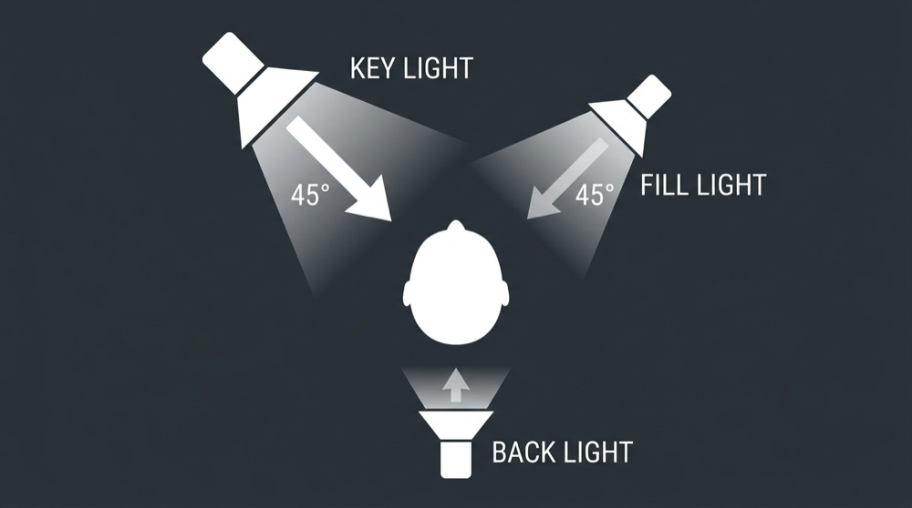
El contraste se mide en ratios (y los ratios son stops)
El lighting ratio es la relación de intensidad entre el lado key y el lado fill del rostro. No se mide "a ojo": se lee con fotómetro incidente lado a lado y se expresa como potencia de 2, porque cada stop duplica o divide la luz. 1 stop de diferencia = 2:1; 2 stops = 4:1; 3 stops = 8:1; 4 stops = 16:1. Bajar el fill sube el ratio y hunde las sombras; subirlo lo aplana.
La decisión high-key vs low-key no es cuánta luz total hay, sino ese ratio. High-key (~1:1 a 2:1) = comedia, comercial, cocina, producto, corporate luminoso. Low-key (8:1 o más) = noir, terror, thriller. El control vive en el fill, no en el key.
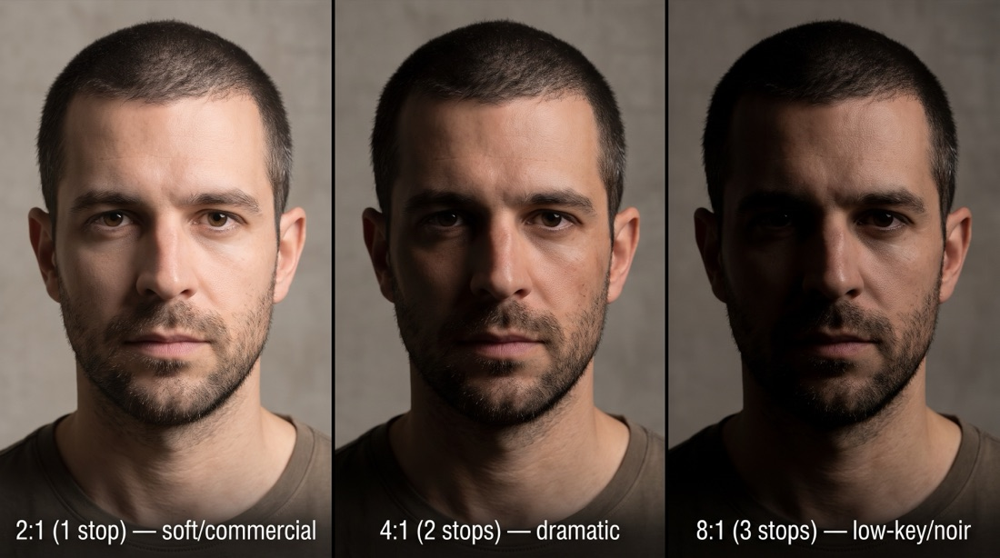
El ratio ASC se escribe (key+fill):fill, por eso "igualar" key y fill NO es 1:1 sino 2:1 — el key también cae sobre el lado de sombra, así que el fill queda contado dentro del key. El amateur que dice "lo puse en 1:1" en realidad describe mal la convención y sus números no comunican con un DP. Cuando pidas o midas un ratio, hablas en potencias de 2 sobre stops enteros.
Duro o suave: es el tamaño de la fuente, no el aparato
El error nº1 del amateur es creer que "softbox = suave" como categoría fija. La dureza depende del tamaño aparente de la fuente respecto al sujeto: tamaño físico ÷ distancia. Fuente pequeña o lejana (sol directo, fresnel spot) = sombra de borde duro y definido. Fuente grande o cercana (softbox de 1,2 m a 1 m, cielo nublado) = transición de sombra suave y gradual. El mismo softbox da luz suave a 1 m y semi-dura a 4 m.
Y hay una palanca doble escondida: acercar la fuente para suavizarla también acelera su caída (falloff) por la ley del cuadrado inverso, oscureciendo el fondo. El profesional usa las dos cosas a la vez — más suavidad y más separación del fondo — con un solo movimiento.
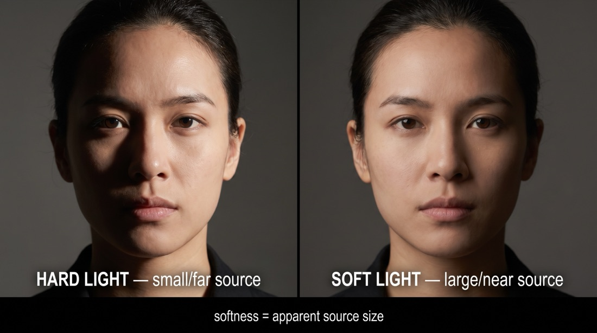
A veces la mejor herramienta de iluminación es quitar luz, no agregarla. El negative fill —una bandera de duvetyne negro, tela o foam core negro al lado de sombra— absorbe la luz ambiente y el rebote, profundiza las sombras y sube el contraste sin tocar ningún aparato. Con el rango dinámico digital, controlar sombras esculpe un rostro plano mejor que sumar vatios. Cero costo, cero watts: ante "se ve plano", el amateur prende otra luz, el pro pone un negro.
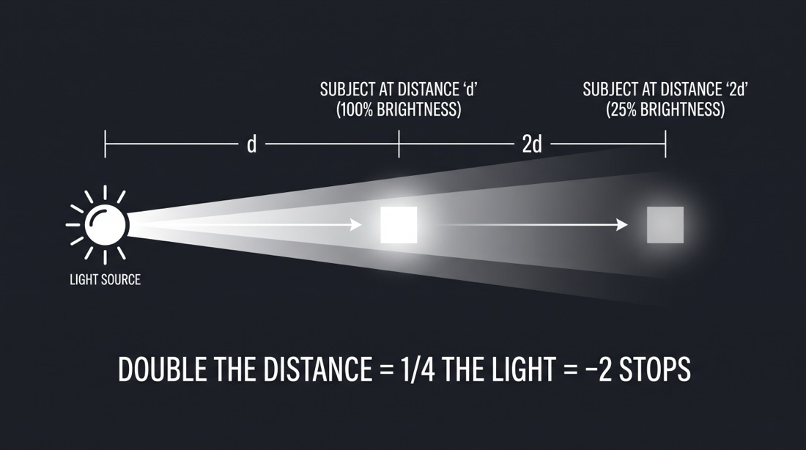
Los patrones de retrato: elegir dirección es elegir textura
El ángulo horizontal y vertical del key define el patrón sobre el rostro. Butterfly / Paramount: key frontal y alto sobre el eje de la nariz, sombra simétrica bajo ella → glamour clásico, adelgaza y realza pómulos (suele acompañarse de un fill inferior tipo clamshell). Loop: key a ~30–45° y apenas sobre los ojos, pequeña sombra de nariz que cae hacia la mejilla sin tocarla → el default seguro y favorecedor para entrevistas. Rembrandt: key a ~45–60° y más elevado hasta que la sombra de la nariz se une con la de la mejilla dejando un triángulo de luz aislado → drama pictórico. Split: key a 90°, media cara en luz y media en sombra → máximo conflicto, se dosifica.
Ortogonal al patrón está broad vs short: en un rostro girado, iluminar el lado más visible (broad) ensancha; iluminar el lado menos visible (short) adelgaza y esculpe — short es el default favorecedor. Y toda luz lateral rasante revela textura de piel; la frontal la borra. Elegir dirección es elegir cuánta edad y textura muestra una cara.
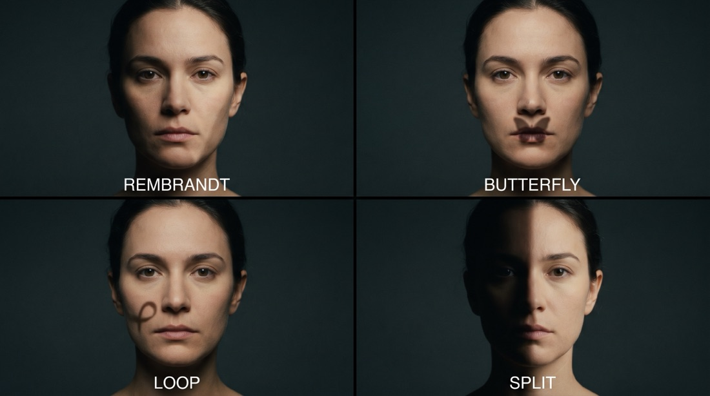
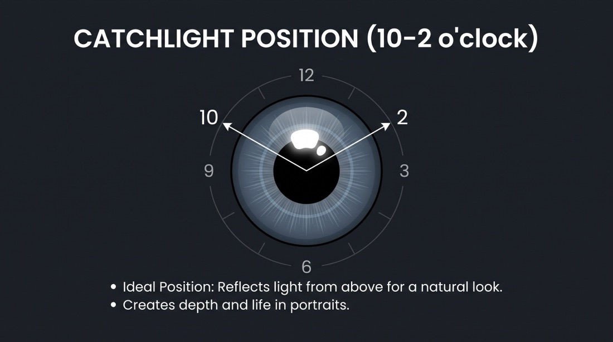
La forma del catchlight delata la fuente y puede romper toda la ilusión. Redondo = softbox octa o beauty dish; rectangular = softbox; punto duro = fuente pequeña. Un catchlight cuadrado (o doble) en un plano vendido como "luz de ventana natural" grita "estudio". El amateur ni mira el reflejo del ojo; el profesional lo verifica en cada toma porque la audiencia lee inconscientemente la coherencia entre ese reflejo y la luz que la escena promete. Sin catchlight, los ojos se ven muertos.
Luz motivada y prácticas: de "iluminado" a "creíble"
Toda luz artificial debería justificarse por una fuente visible o implícita del mundo del plano: ventana, lámpara, luna, TV, fuego. El gaffer esconde los aparatos fuera de cuadro, pero su dirección, color y calidad imitan esa fuente diegética. Regla no escrita: si hay una lámpara práctica cálida en cuadro, el key de ese lado debe ser cálido. Las practicals son esas fuentes visibles dentro del encuadre (lámparas, velas, neón, pantalla de TV); se atenúan con dimmer para que "brillen" sin quemar, y casi siempre motivan la luz real que trabaja desde fuera de cuadro.
El truco de oficio incómodo: la práctica en cuadro rara vez ilumina de verdad al actor — es decorado. Una fuente oculta hace el trabajo pesado imitando su color y dirección. Por eso el amateur que "solo enciende la lámpara del set" obtiene una cara oscura y un foco quemado.
Temperatura de color: el contraste que no es de luminancia
Toda fuente tiene una temperatura en Kelvin y la cámara se balancea a una referencia. El contraste cálido/frío es tan expresivo como el de brillo: mezclar temperaturas a propósito —interior cálido tungsteno vs ventana o luna fría— crea separación cromática y profundidad. Hacerlo por accidente da pieles verdosas o anaranjadas. Y ojo con los LEDs baratos: un CRI bajo destruye tonos de piel de forma incorregible en post.
Cinematic portrait of a 40yo man, Rembrandt lighting: soft key light from camera-left at 45 degrees and elevated 45 degrees creating a small triangle of light on the right cheek, subtle blue rim/backlight from behind separating him from a dark charcoal background, minimal fill (4:1 ratio, deep shadow on right side), warm 3200K key, catchlight at 10 o'clock in the eyes, 85mm lens look, shallow depth of field --ar 2:3 --style raw
Film noir interior, single hard key light motivated by a desk lamp practical (warm 2900K) camera-right, 8:1 lighting ratio, deep unfilled black shadows on the left side of the face, hard-edged shadow of window blinds across the wall, cool 5600K moonlight spill from window in background, high contrast, 35mm anamorphic, volumetric haze --ar 16:9
Beauty portrait, butterfly/Paramount lighting: large soft key directly in front and above the face pointing down at 45 degrees, symmetrical butterfly shadow under the nose, silver reflector fill below chin (clamshell), 2:1 low ratio, even bright high-key white seamless background, 5600K daylight, round catchlights at 12 o'clock, 100mm macro look --ar 4:5
Subtle push-in on the subject, keep the low-key Rembrandt lighting and warm 3200K key from camera-left unchanged, flickering candle practical motivates soft warm light on the face, shadows stay deep and stable, no relighting, cinematic, 24fps motion --duration 5s
creative-spec por shot y se ejecuta con los prompts de imagen y de animación; el look de temperatura cálido/frío se termina en el grade según COLOR-GRADING.md (LUT cálido para narrativa vs frío/cinematográfico para las decisiones). Cuando animes, arranca siempre del mismo still ya iluminado y pídele al modelo no relighting para no romper la continuidad de luz entre clips.✅ Haz
- Piensa en la relación entre key/fill/back antes que en agregar luces; el fill es la perilla del mood.
- Pide y mide el contraste en ratios sobre stops (2:1, 4:1, 8:1), no "a ojo".
- Acerca la fuente para suavizar — y aprovecha que también oscurece el fondo.
- Motiva cada luz por una fuente del plano y verifica el catchlight (posición y forma) en cada toma.
- Usa CRI ≥90 para piel; mezcla temperaturas a propósito, no por accidente.
❌ Evita
- Creer que "softbox = suave" sin mirar la distancia (tamaño aparente = físico ÷ distancia).
- Decir "1:1" cuando igualas key y fill: la convención ASC lo llama 2:1.
- Sumar otra luz cuando "se ve plano" — prueba primero negative fill (un negro).
- Aceptar el ratio aplanado que devuelve la IA sin negar el fill explícitamente y ajustar en post.
- Iluminar solo con la práctica en cuadro esperando que ilumine al actor: es decorado.
Checklist de cierre
Color: teoría, grading y LUTs
Del color como dato al color como emoción. La temperatura en Kelvin, los espacios de color, los scopes que reemplazan a tu ojo, la línea de tono de piel, los LUTs y la coherencia de paleta: el oficio que separa un plano que "se ve lindo" de una escena que se siente cinematográfica.
Al terminar este módulo vas a poder
- Separar corrección técnica de grading creativo y ejecutarlos en el orden correcto (normalizar → igualar → estilizar).
- Leer waveform, RGB parade y vectorscope para juzgar exposición, dominantes y tono de piel con datos, no con el ojo.
- Elegir y aplicar LUTs con criterio: entender log vs Rec.709, espacios de color, tamaños de .cube y el sistema de paleta dual de nuestro pipeline.
El color es un dato antes de ser una emoción
Cada fotograma llega a post como números: niveles de rojo, verde y azul por píxel, distribuidos a lo largo de un rango de brillo. El amateur mira esos números convertidos en imagen y decide "a ojo" si le gusta. El profesional sabe que su ojo se adapta, que la luz de la sala miente y que dos pantallas nunca muestran lo mismo. Por eso el color de cine se trabaja en dos etapas separadas y en un orden que nunca se invierte.
Primero la corrección (o balancing): un paso técnico y neutro que lleva cada plano a un punto de partida correcto — negros a cero, blancos donde deben, gris neutro sin dominante de color, tonos de piel naturales, y todos los planos de una misma escena igualados entre sí. Recién después viene el grading: el paso creativo donde aplicas look, mood y paleta (teal-orange, día-por-noche, bleach-bypass). El error número uno del principiante es tirar un "look" o un LUT sobre material desbalanceado: el look amplifica los defectos de base en vez de corregirlos.
El orden de operaciones es obligatorio y causal: normalizar (log→709) → balancear → igualar planos entre sí → secundarios (ajustes selectivos) → look/LUT creativo → broadcast-safe. El principiante trata el LUT como un filtro de Instagram de un click y lo pone primero; no sabe que el look va casi al final, sobre una base ya neutra. Y hay un dato más incómodo: la coherencia shot-to-shot es el 80% del trabajo real de color, no el "look". Aunque cada plano suelto se vea bien, si no igualas exposición, balance y piel al plano de referencia (hero shot), el corte "salta" y rompe la inmersión.
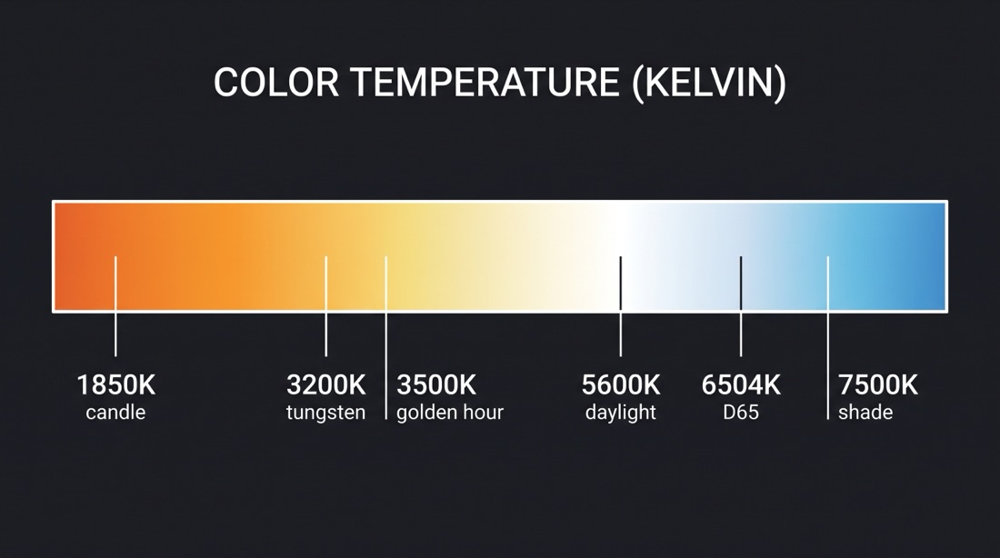
Los scopes: la verdad que tu ojo no puede ver
El monitor del amateur está sin calibrar y la luz de la sala lo engaña. Corrige "a ojo" y en otra pantalla se ve mal, porque el color es relativo al display y al entorno. La regla profesional es tajante: "never trust your eyes alone". Los scopes son instrumentos objetivos que reemplazan al ojo, y cada uno responde una pregunta distinta.
El waveform mapea la luminancia (brillo) por posición horizontal de la imagen sobre un eje de 0 a 100 IRE: sirve para exposición, negros y blancos. El RGB parade son tres waveforms separados R/G/B: si los tres "pisos" no alinean en una zona que debería ser neutra, hay una dominante de color. El vectorscope es un círculo que muestra el hue como ángulo y la saturación como distancia al centro, sin brillo: es donde vive la línea de piel. El histograma muestra la distribución de píxeles por brillo. Exposición → waveform; dominante → parade; piel → vectorscope.
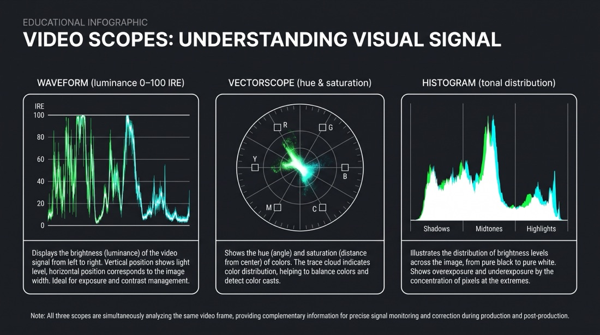
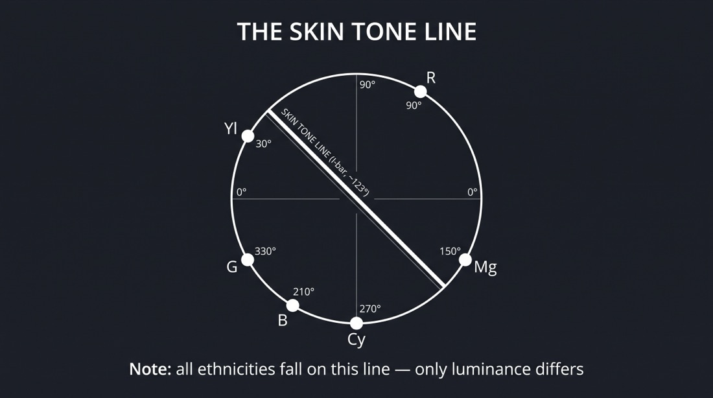
La línea de piel del vectorscope funciona para todas las etnias porque lo único que cambia entre pieles claras y oscuras es la saturación y el brillo, no el ángulo de hue. El amateur cree que cada tono de piel es "un color distinto" y ajusta a ojo; no sabe que existe un invariante físico verificable. La consecuencia práctica y ética: subir la luminancia de una piel oscura a 70 IRE para "igualarla" a una piel clara es un error técnico (deforma la exposición real) y representacional (la blanquea). Se corrige el hue a la línea; se respeta la luminancia propia.
Log vs Rec.709: el contenedor de datos y la curva de entrega
Log (S-Log3, Canon Log, ARRI Log-C, V-Log, D-Log) es una curva de transferencia logarítmica que reparte los datos del sensor de forma perceptualmente eficiente para maximizar el rango dinámico grabado en un archivo que se ve plano, desaturado y lechoso. Rec.709 es el espacio y gamma de entrega estándar de TV y web SDR. Filmas en log para capturar todo; después transformas — vía un LUT técnico o un Color Space Transform (CST) — a Rec.709 para entregar. El log no es un look: es un contenedor, como un RAW de tono.
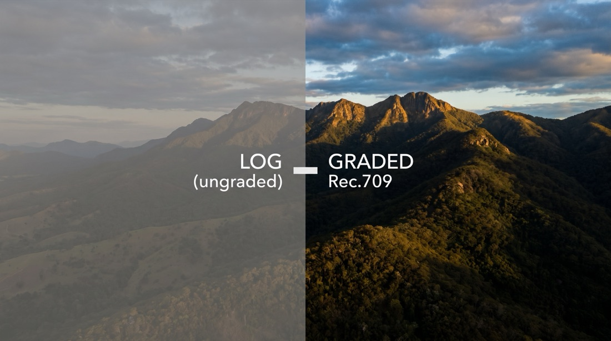
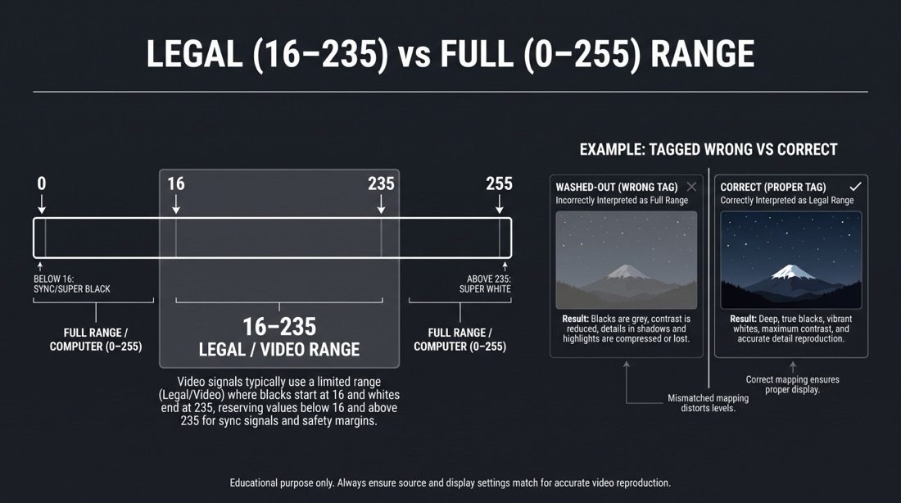
El flag de rango (full 0-255 vs legal 16-235) es metadata invisible: el amateur nunca lo ve, solo sufre el síntoma — el contraste cambia entre el timeline y el archivo exportado, o entre QuickTime, Chrome y la TV. Ese último caso también tiene otra causa gemela: el mismatch de gamma (2.2 vs 2.4) y la gestión de color por aplicación. El profesional fija gamma 2.4 en una sala oscura calibrada y hace coincidir el flag de rango en captura, timeline y export. Cuando "se ve distinto en cada lado", casi siempre es una de estas dos cosas, no tu grade.
Interior noir office at night, single tungsten desk lamp at 3200K warm key light on subject's face, cool 5600K moonlight spilling through blinds onto the far wall, teal-orange complementary separation, skin tones warm and natural, deep shadows, 40mm lens, shallow depth of field --ar 16:9 --style raw
Slow push-in, warm golden-hour sunlight (~3400K) raking from camera-left, long soft shadows, dust motes catching the light, gentle wind in the grass, warm highlights and cool blue shadows, subject's skin glowing naturally — duration 5s
Armonías de color: elegir la relación según la emoción
La rueda de color organiza las relaciones. Complementario: opuestos a 180° (azul/naranja) → máximo contraste y tensión. Análogo: 2-4 vecinos (azules-verdes-cian) → armonía y calma. Triádico: tres colores a 120° → vibrante y balanceado. Split-complementary: un color más los dos vecinos de su opuesto. El profesional elige la armonía según el beat narrativo — tensión pide complementario, unidad pide análogo — no por gusto.
El caso rey del cine comercial es el teal-orange. No es "una moda de Instagram": funciona por una razón física. La piel humana cae naturalmente en el naranja de la rueda, y su complementario exacto es el teal/cian. Empujar las sombras y los fondos hacia teal maximiza la separación figura-fondo del sujeto usando el color que la piel ya tiene. Por eso hay que entender el mecanismo — complementario de la piel — para saber cuándo usarlo y cuándo no, en vez de aplicarlo a todo o evitarlo "por cliché".
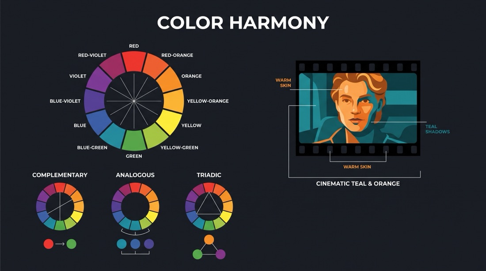
Primary vs secondary, y qué es realmente un LUT
Los ajustes primary afectan toda la imagen a la vez, divididos por rango tonal: lift (sombras), gamma (medios), gain (altas), más offset y saturación global. Las ruedas Lift/Gamma/Gain son el corazón del primary. Los secondary son ajustes selectivos a una región: un qualifier HSL aísla un color (la piel, el cielo), un power window aísla una zona geométrica. Saber si un problema es "de toda la imagen" o "de una región" define qué herramienta tocas: bajar la saturación del verde de fondo sin arruinar la piel es un secondary, no la saturación global.
Un LUT (look-up table) es una tabla que reasigna colores. Un 1D LUT solo ajusta la curva de gris/gamma por canal — no puede cruzar canales, así que no puede cambiar hue ni hacer teal-orange. Un 3D LUT manipula hue, saturación y luma juntos: transformaciones cross-channel, un "look" real, o la conversión log→709. Elegir mal es pedirle a la herramienta algo que no puede hacer.
Un LUT creativo asume un espacio de entrada específico. Un pack de "cinematic LUTs" que dice "para S-Log3/S-Gamut3.Cine" da resultados rotos si lo tiras sobre material Rec.709 o sobre otra curva log. Los LUTs no son universales: cada uno declara su espacio de entrada obligatorio en su nombre o documentación. El amateur baja un pack y lo aplica a cualquier footage esperando magia; el resultado son colores imposibles porque le está dando a la tabla un input que no espera. Regla: primero normalizas al espacio que el LUT espera, después aplicas el LUT.
ffmpeg -i slog3_clip.mov -vf "lut3d=Sony_SLog3SGamut3Cine_To_LC-709_65.cube" -c:v prores_ks -profile:v 3 rec709_normalized.mov
ffmpeg -i graded.mov -vf "scale=in_range=full:out_range=limited,format=yuv420p" -color_range tv -colorspace bt709 -color_primaries bt709 -color_trc bt709 -c:v libx264 -crf 16 broadcast_safe_709.mp4
LUT_NARRATIVE (warm/eerie) para historias con archetypes humanos con nombres — su CSS canónico es filter: contrast(1.15) saturate(0.85) brightness(0.95) sepia(0.08) hue-rotate(-10deg), tonos ocres/sienas, negros crushed y un solo acento de color que "cuts through". LUT_CHOICE (cool/cinematic) para decisiones binarias visuales (dos puertas, dos caminos): contrast(1.20) saturate(0.95) hue-rotate(5deg), tintes verdosos/cian. El decision tree y todos los parámetros viven en ai-video-production/COLOR-GRADING.md..cube viven en filters/ a tamaño 33³: wildebeast.cube (warm alto-contraste, dirección LUT_NARRATIVE, verificado sobre footage real en ultimo-tren final-v2) y gazelle.cube (luminoso/aireado para UGC). Ojo: gazelle solo NO satura (SATAVG 16.5) — para colores vivos se combina con vibrance: lut3d=filters/luts/gazelle.cube,vibrance=intensity=0.30 midió SATAVG 22.8 (+37%) en German CF-03. Se aplica per clip en Layer 1, antes del caption burn, y con intensidad parcial 0.6-0.8 si el clip lo pide. Ambos .cube tienen canonical_validation_status: pending — carácter verificado sobre footage real, pero aún NO medido contra referentes (HR#19 "NEVER ESTIMATE, ALWAYS MEASURE").✅ Haz
- Normaliza (log→709) e iguala todos los planos de la escena a un hero shot ANTES de tocar el look.
- Verifica exposición con waveform, dominantes con RGB parade y piel con la línea de 123° del vectorscope.
- Aplica el LUT sobre el espacio de entrada que el LUT espera; usa 33³ para looks y 65³ para transforms técnicos.
- Aísla la piel con un secondary antes de empujar sombras a teal; respeta la luminancia real de la piel oscura.
- Mantén vignette + crushed blacks + alto contraste (universales, 7/7 referentes de nuestro pipeline).
❌ Evita
- Tirar un LUT creativo primero, sobre material desbalanceado — amplifica los defectos de base.
- Corregir "a ojo" en un monitor sin calibrar: sin D65 + gamma 2.4 estás arreglando tu pantalla, no la imagen.
- Forzar toda piel a 70 IRE: aplasta y blanquea la piel oscura (error técnico y ético).
- Confundir full-range (0-255) con legal (16-235): negros lavados o aplastados al exportar.
- Saturación alta global o film grain >20%: look "vibrante" o "TV old" que contradice el cinematic.
Checklist de cierre
Mise-en-scène, dirección de arte y continuidad
Lo que puebla el cuadro como decisión de significado — props, vestuario, textura, materiales — más la continuidad del estado físico del mundo a través de los cortes, y el valle inquietante del rostro IA. Es el eje de consistencia que los modelos tratan al azar: aquí no manda el número, manda el criterio, y este módulo enseña dónde exactamente la IA lo rompe.
Al terminar este módulo vas a poder
- Leer el cuadro entero como lenguaje: decidir props, vestuario, textura, materiales y coherencia de época como elecciones de significado, no como decorado neutro.
- Sostener la continuidad del estado físico del mundo a través de los cortes (posición de props, nivel de un vaso, vela que se consume, dirección de luz, wardrobe) — el trabajo del script-supervisor — y entender por qué la IA lo rompe.
- Diagnosticar y mitigar el valle inquietante del rostro IA (ojos muertos, cadencia de parpadeo, eyeline, lip-sync) y aplicar un gate de seguridad fotosensible a cualquier flash antes de publicar.
Mise-en-scène: todo lo que está en el cuadro significa algo
El amateur piensa solo en el sujeto: apunta la cámara a la persona y deja que el resto del cuadro caiga como caiga. El director de fotografía lee la escena entera como un texto. Mise-en-scène — literalmente "puesta en escena" — es todo lo que puebla el encuadre: el color de las paredes, los props sobre la mesa, la ropa del personaje, la textura de una superficie, la coherencia de época y de material. Nada de eso es decorado neutro; cada objeto es una decisión de significado. Una taza a medio tomar con marca de labial cuenta una historia que una taza limpia no cuenta.
La dirección de arte es la disciplina que gobierna esa capa. Su pregunta no es "¿se ve lindo?" sino "¿qué dice este espacio sobre quién vive acá, en qué época, con cuánto dinero, en qué estado de ánimo?". El curriculum ya te enseñó a componer el cuadro y a iluminarlo; este módulo cubre lo anterior: decidir qué puebla el cuadro. Un set art-directed tiene props deliberados, superficies con desgaste real, wardrobe que pertenece al personaje y una paleta que refuerza el beat. Un set genérico tiene objetos "de relleno" que no dicen nada — o peor, que se contradicen entre sí.
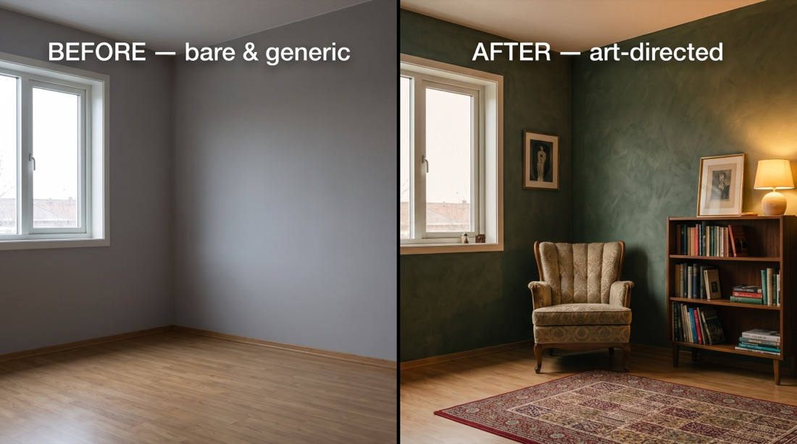
El amateur cree que la dirección de arte es "poner cosas bonitas". El profesional sabe que es un sistema de coherencia de mundo: cada material, prop y prenda tiene que pertenecer a la misma época, clase social y estado físico, o el cuadro se lee "falso" aunque cada objeto suelto esté bien. Un teléfono moderno en una escena de los 70, una pared impecable en una casa que dijiste que estaba abandonada, un cuchillo de cocina de diseño en manos de un campesino: son rupturas de mundo. En IA este eje es el más frágil, porque el prompt describe el sujeto y deja que el modelo invente el resto del cuadro — y lo inventa distinto en cada clip.
1970s working-class kitchen, art-directed for lived-in realism: chipped enamel stove, faded floral wallpaper peeling at one corner, a half-drunk cup of coffee with a lipstick mark, mismatched wooden chairs, warm tungsten practical over the table, wardrobe a worn mustard cardigan — every prop period-consistent and slightly used, no pristine surfaces --ar 16:9 --style raw
Continuidad: el estado del mundo a través de los cortes
La continuidad es la ilusión de que dos planos consecutivos ocurren en un mismo tiempo y espacio continuos. En un rodaje real, el script-supervisor (o continuista) existe solo para custodiarla: anota y vigila el estado físico de todo lo que puede cambiar entre tomas — la posición de cada prop, el nivel de líquido en un vaso, cuánto se consumió una vela, la dirección de la luz, la hora del día, el clima, el wardrobe, hasta de qué mano cuelga un cigarrillo. Es un trabajo aparte de la consistencia de personaje (que la cara sea la misma): esto es la consistencia del mundo.
Cuando falla, el corte "salta" y el espectador siente que algo está mal aunque no sepa qué: la copa estaba a la mitad y ahora está llena, la vela era larga y ahora es corta, la sombra caía a la izquierda y ahora a la derecha. Son errores de raccord. En cine se previenen con notas y fotos de continuidad; en IA se vuelven el problema #1, porque cada clip nace de cero y nadie recuerda el estado del clip anterior.
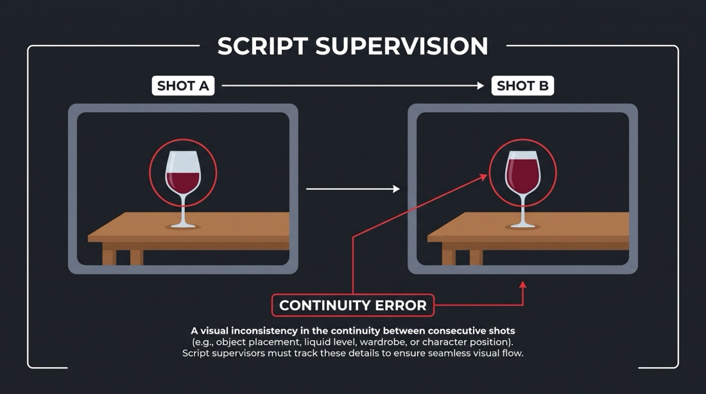
La consistencia de rostro y la consistencia de mundo físico son dos problemas distintos, y la IA sólo resolvió el primero a medias. Puedes tener la misma cara clip a clip y aun así romper la escena porque la vela encendida cambió de altura, el líquido del vaso subió, la puerta que estaba abierta ahora está cerrada o la luz cambió de dirección. Es un unknown-unknown puro: el amateur ni siquiera sabe que existe la categoría "estado del mundo", porque en su cabeza el set "simplemente está ahí". En generación IA cada clip se produce aislado, sin memoria del anterior, así que la deriva de estado es la regla, no la excepción — hay que combatirla activamente.
Continuous shot, same character and wardrobe as the uploaded reference frame, camera locked. Character looking screen-LEFT throughout. Candle on the table stays the same height, wine glass stays half-full, light comes from screen-left. Slow subtle push-in only — no cut, no change of props, wardrobe or light direction. Start frame = uploaded reference. Duration 5s
ai-video-production/CHARACTER-CONSISTENCY.md; la de mundo físico se sostiene con imágenes de referencia del set + keyframing end-frame→start-frame + cutaways para tapar los mismatches inevitables. Regla del sistema (HR#19): never estimate, always measure — verifica el estado comparando frames reales, no confiando en que "seguro quedó igual".Performance y el valle inquietante del rostro IA
La dirección de actuación es un oficio: la credibilidad de un rostro no vive en su nitidez sino en su micro-comportamiento — la micro-expresión que aparece y se va, la cadencia asimétrica del parpadeo, hacia dónde y por qué mira el sujeto (el eyeline), el ritmo de la respiración, la sincronía real entre labio y sonido. Un actor dirigido "está pensando algo" aunque no hable; se le ve en los ojos.
Acá está el defecto que ninguna métrica de nitidez detecta: un rostro IA puede ser perfectamente afilado y aun así leer muerto. Es el valle inquietante (uncanny valley): ojos sin vida, mirada dirigida al vacío o al lado equivocado, parpadeo demasiado regular o ausente, y un lip-sync que "flota" sobre la cara sin anclarse a la mandíbula. El cerebro humano detecta esas fallas en milisegundos aunque no sepa nombrarlas — por eso un rostro casi-real incomoda más que uno obviamente artificial. El realismo de la actuación (y del lip-sync) es un oficio, no un paso técnico que se aprueba solo.
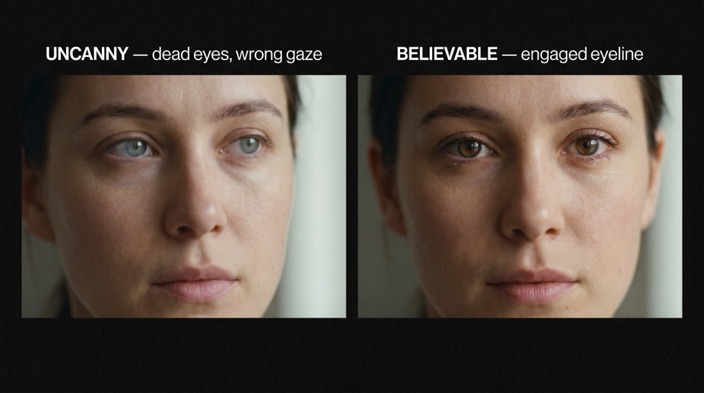
El amateur juzga un rostro generado por su resolución: "se ve nítido, entonces está bien". No sabe que el valle inquietante es ortogonal a la nitidez — un rostro 4K puede ser el más perturbador de todos justamente porque promete realismo y falla en lo invisible: los ojos. Las tres pistas que delatan un rostro IA "muerto" son ojos sin catchlight ni foco (mirada perdida), parpadeo con cadencia errada (demasiado regular, o inexistente) y lip-sync flotante (los labios se mueven pero la mandíbula y las mejillas no acompañan). Ninguna se corrige subiendo la resolución; se corrigen dirigiendo la actuación — igual que a un actor.
Photorealistic medium close-up, 85mm, soft key light with a visible catchlight in the eyes. Subject's gaze directed just off-lens to camera-LEFT as if listening, natural asymmetric blink, micro-expression of held breath — subtle brow tension, lips slightly parted. Real skin with pore texture, no waxy smoothing. Gentle handheld, duration 5s
El cuadro también tiene obligaciones: seguridad y divulgación
Dos cosas que no se ven en el encuadre pero que gobiernan si el video puede publicarse. La primera es la seguridad fotosensible: los flashes y estrobos pueden disparar convulsiones en personas con epilepsia fotosensible, y las plataformas y reguladores aplican límites duros. El formato horror-choice usa white-flash y camera-shake sin ningún gate de convulsiones — y pedirle a un modelo "strobe / flashing lights" puede generar secuencias inseguras sin aviso. La segunda es la divulgación de medios sintéticos: un pipeline 100% IA que publica ads comerciales está obligado a declararlo.
✅ Haz
- Decide el mundo una vez — props, wardrobe, materiales, época — y propágalo como imagen de referencia clip a clip.
- Declara el estado físico y la screen direction en cada prompt ("half-full glass", "light from screen-left", "looking camera-left").
- Usa keyframing end-frame→start-frame para forzar continuidad; tapa los mismatches inevitables con cutaways/insertos.
- Dirige el rostro como a un actor: eyeline concreto, micro-expresión, catchlight, textura de piel real; verifica los ojos a velocidad real.
- Cuenta los flashes (≤3/s) y activa el etiquetado de contenido IA antes de publicar.
❌ Evita
- Prompta solo el sujeto y dejar que el modelo invente el resto del cuadro distinto en cada clip.
- Juzgar la continuidad o el rostro en un frame congelado — la deriva de estado y el parpadeo/lip-sync son problemas temporales.
- Confiar en que "seguro quedó igual": el pipeline genera cada clip aislado, la deriva es la regla.
- Mezclar props/wardrobe de distinta época o material — rompe la coherencia de mundo aunque cada objeto se vea bien.
- Publicar un white-flash sin contar el flash-rate, ni pedirle "strobe" al modelo sin chequear la salida.
Checklist de cierre
Storytelling, hooks y retención
Estructura, gancho y retención: cómo se sostiene la atención en los primeros 3 segundos y a lo largo de la pieza, y por qué el algoritmo reescribe el pacing clásico. Del esqueleto dramático de Aristóteles al corte cada 1.2 segundos que exige el feed — dos regímenes de ritmo que hay que saber elegir.
Al terminar este módulo vas a poder
- Estructurar una pieza con un modelo (3 actos, Story Circle o but/therefore) y auditar si tu guion tiene motor causal o es una lista de eventos.
- Construir un hook que gane al espectador en menos de 3 segundos usando sus tres capas (frame 0, primeras palabras, primer SFX).
- Elegir el régimen de pacing correcto según el destino — ritmo narrativo clásico vs retención algorítmica — y leer las métricas de retención para diagnosticar qué falló.
Primero la forma: un video tiene esqueleto o es una lista de clips
Antes de pensar en el gancho, hay que saber si la pieza tiene forma. El andamiaje por defecto es la estructura de tres actos heredada de la Poética de Aristóteles y codificada para cine por Syd Field en 1979: planteamiento, confrontación, resolución. No es decoración teórica — es el lenguaje común contra el que mides si un ad, un VSL o un reel de storytelling avanza o solo acumula tomas. Sin acto 1 no hay stakes; sin punto de giro la historia no arranca.
Para piezas cortas, el Story Circle de Dan Harmon suele ser más accionable que los tres actos, porque cada una de sus 8 estaciones es una pregunta concreta: ¿qué necesita el protagonista? ¿qué precio paga? ¿vuelve cambiado? El eje conocido↔caos da un test rápido de si el personaje realmente se transformó o solo le pasaron cosas encima.
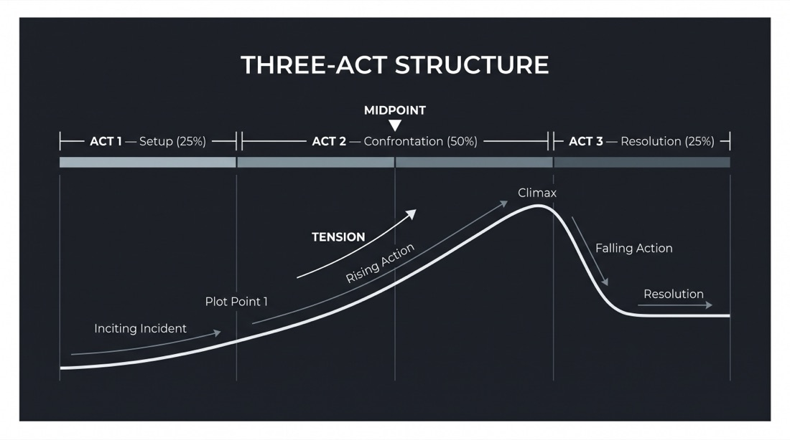
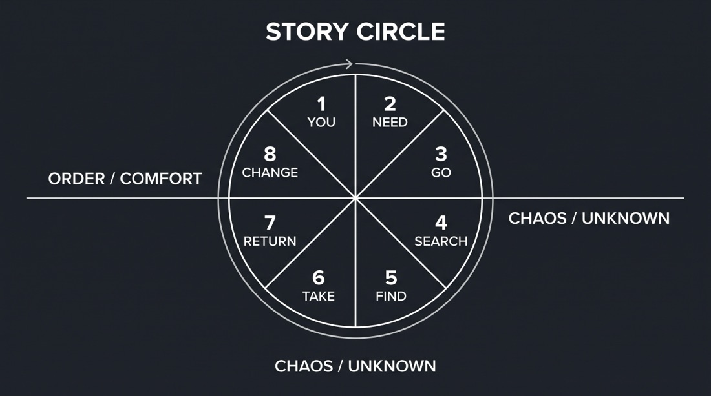
El test "but/therefore" (Trey Parker y Matt Stone, NYU Tisch 2011) es el detector de bugs de causalidad más barato que existe, y se aplica línea por línea a cualquier guion — ad, VSL o reel, no solo ficción. Entre dos beats tienes que poder insertar "pero" (conflicto) o "por lo tanto" (consecuencia). Si solo cabe "y luego", los beats están desconectados y la pieza es una lista de eventos sin motor: va a perder retención aunque cada clip esté impecable. El amateur juzga el guion por si "suena bien" o "está completo", no por si tiene causalidad, y produce secuencias correctas pero muertas. Complemento de McKee: si el estado emocional al final de una escena es igual al del principio, la escena no existe dramáticamente y va a la tijera.
El hook: se gana o se pierde a la mitad de la audiencia en 3 segundos
En short-form el video se empuja al feed sin intención del espectador — nadie hizo clic. Por eso la ventana de decisión es brutalmente corta: el feed decide en poco más de un segundo si te sigue mostrando. El error del amateur es empezar con contexto ("hola, hoy les voy a hablar de…"); el profesional arranca in medias res, en el momento de máxima tensión o resultado ("esto casi me mata"), y rellena el contexto después. Es el cold open aplicado al primer segundo.
Y hay un menú, no un "haz un buen hook": pregunta directa, afirmación contraintuitiva, dato impactante, curiosity gap, pain-point call-out, advertencia ("deja de hacer X"), historia in-medias-res o pattern interrupt visual. Cada familia mapea a un objetivo — educar → dato; emocionar → historia; vender → dolor — y eso permite A/B testear rotando la familia, no solo las palabras.
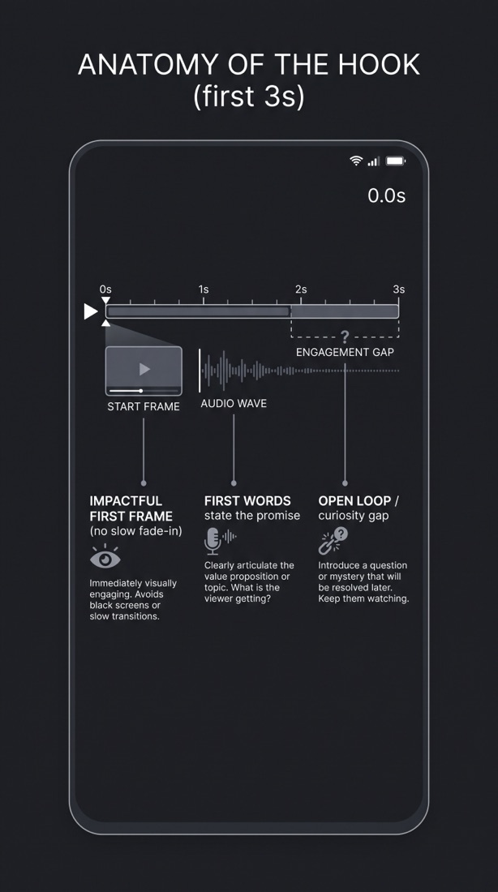
El hook no es solo las primeras palabras: son tres capas simultáneas. Incluye el primer frame (un thumbnail en movimiento) y el primer SFX. Un pattern interrupt visual — algo raro o de alto stakes en pantalla — puede retener antes de que se diga una sola palabra. El amateur piensa el hook como guion ("¿qué frase digo?") y arranca con un plano establishing calmo mientras narra; ya perdió a la mitad en el segundo 2. El 50–60% de drop-off en 3 segundos se combate con imagen y sonido tanto como con texto.
POV first-person, hands gripping a rusted metal door handle in a dark basement, single bare bulb swinging overhead, fast aggressive push-in toward the handle, shallow depth of field, dust motes drifting in the light beam, handheld micro-shake, 24fps cinematic, high tension rising within the first 0.5 seconds, no slow fade-in — duration 5s, camera: dolly-in
Dos regímenes de pacing: el clásico y el del algoritmo
Acá está el malentendido que más cuesta. El ritmo de corte comunica género y energía: cortar rápido = urgencia; sostener el plano = intimidad y gravedad. El Average Shot Length (ASL) de un largo lo confirma sobre más de 13.000 films. Pero en el feed social ese lenguaje se rompe: el corte cada 1.2–1.8 segundos no es una decisión narrativa, es una convención de plataforma para vencer el drop-off. Cada cambio de entorno fuerza al cerebro a re-engancharse y "compra" otro bloque de watch-time. Aplicar cadencia de acción a contenido que clásicamente sería drama es correcto en TikTok y sería un error en cine. Los dos sistemas coexisten; hay que saber cuál rige según el destino.
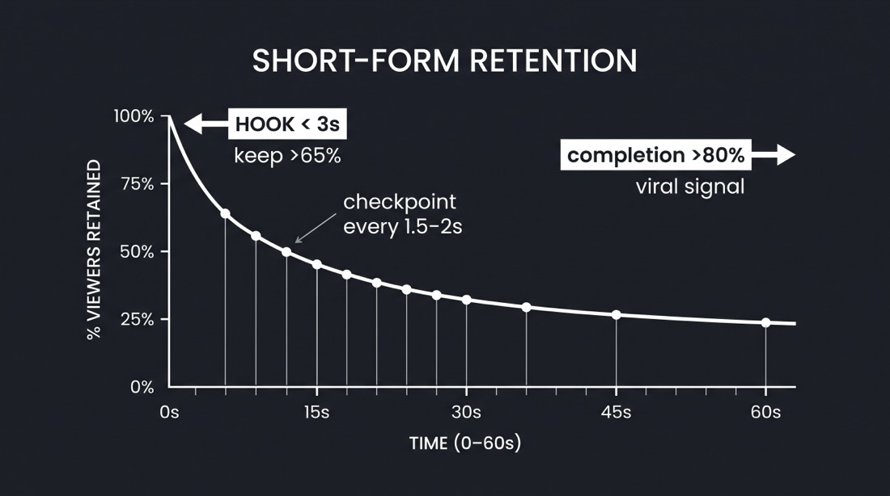
Optimizar el % de retención puede destruir el watch-time absoluto, que es lo que en realidad mueve el alcance. Un clip de 8s al 100% de completion entrega menos señal al algoritmo que uno de 25s al 70%. El recomendador pondera ambos: existe un sweet spot de duración×completion por nicho que se encuentra empíricamente, no acortando todo a ciegas para inflar el porcentaje. El amateur lee "completion alto = bueno" y optimiza la métrica proxy en lugar del objetivo real.
# clips.txt lista 7 planos DISTINTOS de ~1.4s (wide → medium → insert → reaction → text-card → b-roll → push-in) # cada uno un tipo de plano diferente para forzar re-enganche; ningun bloque supera 5s sin cambio ffmpeg -f concat -safe 0 -i clips.txt -c copy opener.mp4
ai-video-production/RETENTION-RULES.md.Densidad narrativa: el silencio es una herramienta, no un error
El principio de cine es show, don't tell: la información emocional se transmite por imagen y comportamiento observable, no por locución explícita. En video la imagen carga el peso; la voz solo conecta beats. El sobre-narrado subestima al espectador y tapa el trabajo visual. Por eso, sobre imagen, la densidad de este sistema es más lenta que el WPM de lectura: el espectador procesa visual y audio en paralelo, y saturarlo de palabras hace que no procese ninguno.
El techo de densidad (~1.1 palabras/seg) es más lento a propósito que el WPM de lectura en voz alta (140–150 WPM ≈ 2.3 palabras/seg). El instinto amateur es "no dejar huecos" y tapar todo con locución; no percibe que el hueco deliberado — dejar que la imagen respire — es lo que genera peso emocional. El silencio narrativo no es un error a rellenar: es un instrumento. Confundir "cobertura de narración" con "calidad" produce piezas correctas pero planas.
Rewrite this 25-second reel script applying one open loop: - The opening beat (0-2s) plants ONE concrete, closable question about [X], stated as a promise, not answered. - The middle beats sustain it with but/therefore causality (never "and then"); each beat changes emotional value. - The final beat (~sec 20) pays the promise with a twist, before the end. Keep narration at 0.7-0.9 words/sec so the visuals breathe. Mark where the loop OPENS and where it CLOSES.
ai-video-production/CAPTIONS.md y RETENTION-RULES.md § Narrative simplicity.✅ Haz
- Arranca in medias res: frame 0 de máxima tensión, promesa en las primeras palabras y SFX de impacto en el ms 0 — las tres capas del hook en <1.5s.
- Audita el guion con but/therefore línea por línea; si solo cabe "y luego", falta motor causal.
- Elige el régimen de pacing por el destino: cadencia 1.2–1.8s en el opener de un reel; 4–6s en un VSL o documental.
- Planta el open loop en el segundo 2 y págalo antes del final, con una brecha cerrable y valiosa.
- Deja respirar la imagen: 0.7–0.9 palabras/seg; el silencio carga peso.
❌ Evita
- Abrir con contexto o logo ("hola, hoy les voy a hablar de…") — pierde la mitad en el segundo 2.
- Tratar el hook como solo el guion e ignorar frame 0 y primer SFX.
- Aplicar cadencia de acción a todo por igual, o dejar bloques >5s sin ningún cambio.
- Abusar del "esperá al final" sin pagar la promesa: la curiosidad no devuelta se vuelve frustración y churn.
- Tapar cada hueco con locución u optimizar el completion acortando a ciegas y hundiendo el watch-time absoluto.
Checklist de cierre
Transiciones y ritmo de edición
El corte es gramática: cada tipo de corte y cada transición significan algo fijo, sus duraciones se miden en frames enteros (no existe el medio frame), se sincronizan con la música al frame más cercano al beat, y las reglas de continuidad (180°, 30°) no viven en el plano sino EN EL CORTE — por eso solo aparecen al ensamblar. En un pipeline con IA, donde cada clip nace aislado, esto es doblemente traicionero: hay que declarar la gramática antes de generar.
Al terminar este módulo vas a poder
- Calibrar la duración de cualquier corte o transición en conteo de frames, no en números "que suenan rápido".
- Esconder un corte con match-on-action y evitar los saltos de eje (180°) y de ángulo (30°) al ensamblar clips generados por separado.
- Elegir la transición correcta por su significado gramatical (corte duro = "y luego", disolvencia = "pasó tiempo", negro = "fin de capítulo") y sincronizar cortes con el beat.
- Fijar un ASL / cortes-por-minuto objetivo por formato y traducir todo a prompts de Kling/Veo y recetas de ffmpeg.
El corte invisible: continuidad como default
El montaje de continuidad es el sistema dominante del cine narrativo y su meta es una sola: que el corte sea invisible. El espectador sigue la historia sin notar la edición. Se apoya en match-on-action, eyeline match, dirección de pantalla consistente, y las reglas de 180° y 30°. La clave: el corte se justifica por la acción o la mirada, nunca por capricho. Es el default contra el que se miden todas las demás decisiones — el editor elige romper continuidad (un jump cut, un salto de eje) para producir un efecto; si la rompe por accidente, el corte "salta" y expulsa al espectador de la historia.
La segunda idea fundacional es el efecto Kuleshov: un mismo plano neutro de un rostro, intercalado con una sopa, un ataúd o una mujer, se lee como hambre, tristeza o deseo. El significado no vive en los planos sino en su yuxtaposición. El montaje crea emoción que no está en ningún plano por separado — y eso permite construir reacción, causa-efecto y punto de vista con material barato y reusable, algo decisivo cuando generar un plano específico con IA es caro pero un plano de reacción neutro se reutiliza.
Toda transición corta es un conteo entero de frames
Esta es la idea que reordena todo el módulo. La pantalla solo puede cambiar en múltiplos de 1/fps. No existe el medio frame. Cuando el oficio habla de un flash de "0.04s" o un shake de "0.03s", no está eligiendo un número bonito: está pidiendo exactamente un frame. Por eso hay que conocer el frame rate para calibrar cualquier impacto, y por eso el mismo efecto se comporta de forma radicalmente distinta según cuántos frames dure.
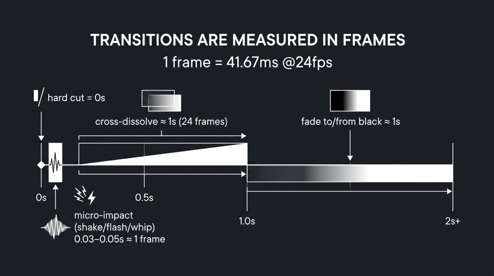
El amateur pone "0.1s" o "0.2s" para un flash porque "suena rápido", sin saber que a 0.042s el efecto es pre-atencional (se siente como golpe) mientras que a 0.15s ya es un movimiento visible y lento — dos cosas completamente distintas. La frontera está en ~3 frames, y no la vas a encontrar por instinto: solo si sabes que la pantalla cambia únicamente en múltiplos de 1/fps y cuentas los frames.
Los errores que viven en el corte: 180° y 30°
El salto de eje y el jump cut son errores que no están en ningún plano, sino en la relación entre dos planos. La regla de los 180°: una línea imaginaria (el eje de acción) atraviesa a los personajes; la cámara debe quedarse siempre del mismo lado de esa línea. Si en el corte salta al otro lado, los personajes invierten su posición en pantalla y parecen mirar hacia el mismo lado en vez de mirarse. La regla de los 30°: entre dos planos consecutivos del mismo sujeto, la cámara debe desplazarse al menos 30° (o cambiar notablemente el tamaño de plano); con menos, la imagen "salta" en vez de ofrecer una perspectiva nueva.
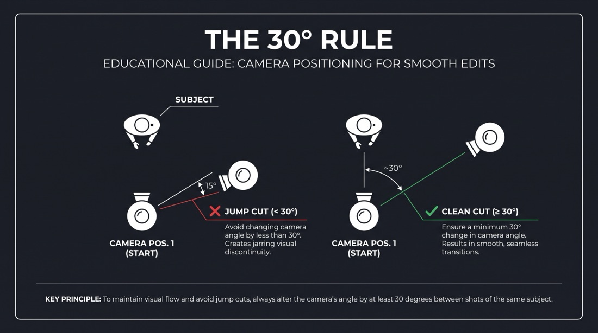
El salto de eje (180°) y el jump cut (30°) son errores que viven EN EL CORTE, no en el plano: dos planos perfectamente correctos por separado pueden ser ilegales juntos. Por eso no se detectan revisando clips uno por uno — solo aparecen al ensamblar. En un pipeline con IA es doblemente traicionero porque cada clip se genera aislado, sin ninguna conciencia del eje ni de la dirección de mirada de su vecino.
--ref) con el lado del eje escrito en cada prompt; nunca asumas que el modelo "recuerda" la escena anterior.Match-on-action: esconder el corte en el pico del movimiento
La técnica reina de la continuidad invisible: cortar en medio de una acción continua (una mano que se cierra, alguien que se sienta, una puerta que se abre) de modo que el movimiento se completa en el plano siguiente. El ojo sigue el movimiento y no registra el corte. El detalle de oficio que casi nadie enseña: no se corta al inicio ni al final del gesto, sino en su punto de máxima velocidad, porque ahí el ojo está en supresión sacádica relativa y es menos sensible al salto.
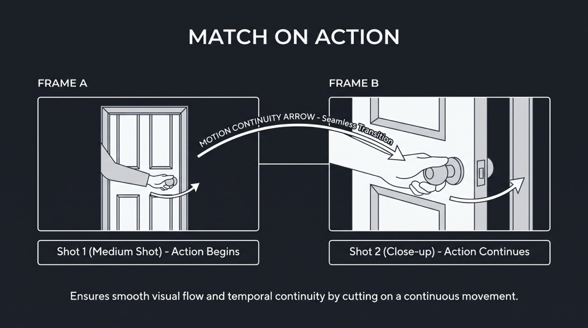
El amateur corta cuando la acción "termina" (en reposo), que es justo donde el ojo SÍ nota el salto. El profesional corta en pleno movimiento, en el pico de velocidad — y el resultado es invisible. La variable clave no es "qué acción", sino la posición del corte dentro del gesto. En IA se logra pidiendo que el clip A termine a mitad del gesto y el clip B lo continúe.
Clip A: POV first-person, a hand reaches toward an old brass door handle in a dim hallway, warm tungsten key light from the left, the hand grips the handle and BEGINS to turn it clockwise, motion stops mid-turn, 24fps cinematic motion blur, shot on 35mm. Clip B: POV first-person, the SAME brass door handle mid-turn, the hand COMPLETES turning it clockwise and the door starts to open revealing darkness, identical warm tungsten light from the left, 24fps cinematic motion blur, 35mm. // cortar A→B con concat (corte duro) en el frame donde la muñeca gira más rápido
Cada transición gramatical significa algo fijo
El corte directo es el default y significa "y luego". La disolvencia (un plano se funde en otro) significa paso de tiempo o conexión emocional, o transición a sueño/recuerdo. El fundido a negro es punto y aparte: fin de acto/capítulo. Cada transición es puntuación narrativa — poner disolvencias "porque quedan lindas" le dice al cerebro del espectador "pasó tiempo" aunque no sea tu intención. En short-form vertical (Reels/TikTok) el 90%+ deben ser cortes directos; las disolvencias largas matan el ritmo.
# A dura 5s; la disolvencia de 1s empieza a los 4s y termina al arrancar B. # OJO: xfade solapa los clips → resta 1s al total del timeline o el video se acorta. ffmpeg -i A.mp4 -i B.mp4 \ -filter_complex "[0][1]xfade=transition=fade:duration=1:offset=4[v]" \ -map "[v]" out.mp4 # offset = (duración de A − duración del fade). Solo para "pasó tiempo", no como default.
J-cut y L-cut: el audio y el video no cortan juntos
En un J-cut, el audio del plano siguiente entra ANTES que su imagen (oís lo que viene). En un L-cut, el audio del plano anterior continúa DESPUÉS de que su imagen cortó (seguís oyendo lo anterior). Los nombres vienen de la forma de los bloques en el timeline. La mayoría de los cortes profesionales de diálogo son J o L, no cortes rectos — desalinear audio y video a propósito es lo que hace que una escena se sienta orgánica y no un ping-pong entrecortado.
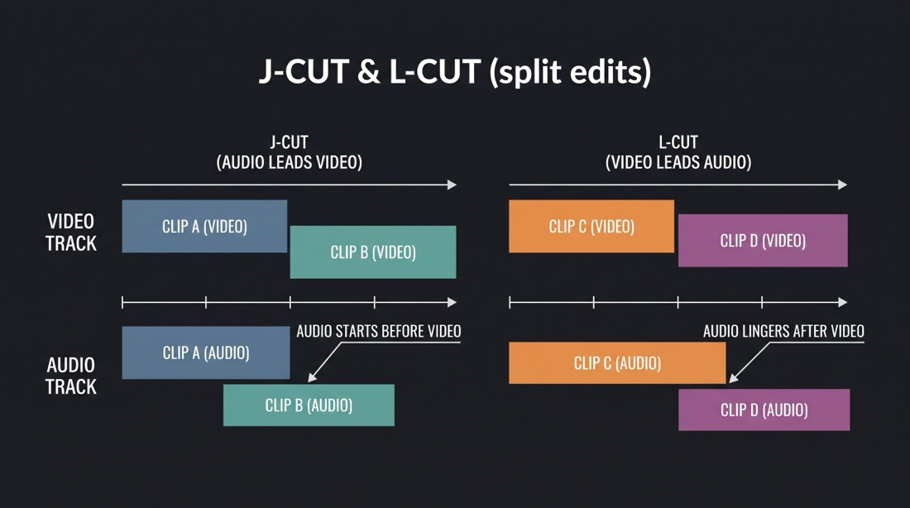
El corte recto sincrónico (audio y video en el mismo frame) es en realidad la excepción, y suena "mecánico". El amateur corta audio+video juntos por default porque es lo que hace el timeline sin tocar nada, y el resultado suena a ping-pong sin saber por qué. Nunca sospecha que la solución es DESALINEAR audio y video a propósito.
Ritmo: ASL, cortes por minuto y sincronía con el beat
El Average Shot Length (duración media de plano) es la métrica cuantitativa del ritmo. El cine pre-1960 promediaba 8-11s por plano; el mainstream reciente, 4-6s; la acción moderna, 2-4s; el short-form vertical retiene con 1.5-3s por plano y cortes cada 1-2s en el hook. El ASL objetivo se fija por género y plataforma ANTES de editar: demasiado alto para el formato aburre, demasiado bajo para el contenido agota. Y sobre la música, el corte se sincroniza al frame más cercano al beat, no al milisegundo musical exacto: cuantizar al frame es más preciso perceptualmente, no menos.
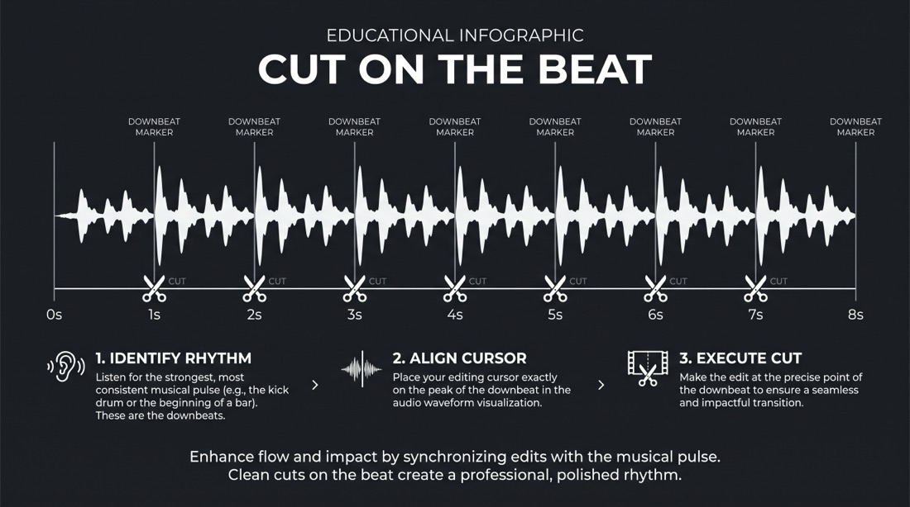
check-pacing.sh corre ffmpeg -filter:v "select='gt(scene,0.3)'", cuenta escenas y calcula cortes/min (integrado como Q17 del pre-render-gate). Ojo con una trampa que enseñó pueblo-fantasma-desierto v2: 2.7 cortes/min estaba EN target pero los shots eran estáticos → se percibió "quieto". El target de hard cuts solo vale si los planos tienen internal motion — Ken Burns (scale 1.12 + pan sutil), parallax por capas y caption swaps. Esa "FELT cadence" real ronda 18-30 cortes perceptibles/min y ningún gate automático la cubre: un frame nunca debe estar quieto.hard-cut-with-whoosh (duración 0.0s + sting whoosh-warm.mp3 0.48s; validado 8/8 en transitions/catalog.json) — nunca saltear el sting. Y el beat narrativo se marca con corte + AUDIO específico, no solo con imagen: la taxonomía de 7 cortes narrative-led (ai-video-production/NARRATIVE-LED-EDITING.md) tipa cada corte por color, duración y sonido — white flash ~0.15s al tomar la elección, black+thud 0.3-0.5s a la rama mala, warm white 0.3-0.5s hacia el cliffhanger, etc. Las duraciones DEBEN variar 0.15-0.8s según el peso emocional; uniformarlas aplana el ritmo. El caso: bosque-abandonado (taxonomía completa) le ganó a mina v6 (solo flash + corte directo) para el ojo humano, aunque Gemini puntuó al revés — por eso el ritmo exige validación humana.drawbox blanco enable entre esos frames + un crop/translate breve; en Resolve, keyframes de exposición y transform en 1-2 frames.# Flash blanco de 2 frames en los frames 120-121 = el downbeat a 5.0s @24fps. # 2 frames = 0.083s: registra como golpe, no como movimiento lento. ffmpeg -i in.mp4 \ -vf "drawbox=enable='between(n,120,121)':color=white@1.0:t=fill" \ -c:a copy out.mp4 # Para el shake, encadená un crop+translate de 1 frame en el mismo n.
✅ Haz
- Calibra todo impacto/whip/flash en conteo entero de frames (conoce tu fps): 1 frame ≈ 42ms @24; ≥3 frames para que registre.
- Declara la screen direction (mira-izquierda/derecha) de cada clip ANTES de generarlo, y verifica el eje al ensamblar.
- Corta el match-on-action en el pico de velocidad del gesto, con corte duro (concat, no xfade).
- Usa la transición por su significado: corte duro = "y luego"; disolvencia 1s = "pasó tiempo"; negro = fin de capítulo.
- Fija el ASL / cortes-por-minuto objetivo por formato y valida el ritmo con ojo humano, no solo con Gemini.
❌ Evita
- Poner duraciones "que suenan rápido" (0.1s, 0.2s) sin traducirlas a frames: caes en la zona lenta y visible.
- Revisar los clips uno por uno y creer que el ensamblado va a estar bien — el salto de eje y el jump cut solo aparecen JUNTOS.
- Cortar audio y video en el mismo frame por default: el diálogo suena a ping-pong mecánico. Usa J/L-cuts.
- Meter disolvencias/wipes "porque quedan lindos": estás escribiendo "pasó tiempo" sin querer, y en short-form matas el ritmo.
- Confiar en un cuts/min "en target" con shots estáticos: sin internal motion se percibe quieto igual.
Checklist de cierre
Sonido y música
Las cuatro capas del sonido, la mezcla por niveles, el loudness por plataforma (LUFS) y la sincronía: por qué el audio decide la percepción de calidad. Y el nudo que confunde a todos — los niveles de fader por capa (voz −5 / SFX −10 / música −16) son BALANCE relativo en el timeline; el −14 LUFS integrado es la ENTREGA final. Viven en etapas distintas y no se contradicen.
Al terminar este módulo vas a poder
- Separar la banda sonora en las 4 capas profesionales (diálogo / música / SFX / ambiente) y balancearlas con jerarquía perceptual.
- Distinguir el balance relativo de faders del loudness integrado de entrega, y masterizar a −14 LUFS / −1 dBTP con ffmpeg loudnorm 2-pass.
- Aplicar la cadena de voz (HPF → corte de lodo → presencia → de-ess), el ducking correcto según el rol de la música, y el room tone que pega los cortes.
- Traducir cada estándar a un prompt de generación (Veo 3 / ElevenLabs) o a un fix medible en post (ffmpeg / Resolve).
El audio es la mitad que decide la percepción de calidad
La imagen puede ser impecable y el video seguir sintiéndose "amateur" por una sola razón: el sonido. El oído detecta problemas que el ojo perdona — un silencio que "respira vacío" entre frases, una voz que no se entiende sobre la música, un video que suena más bajo que todo el feed. Nada de eso es cuestión de gusto: son capas, niveles y mediciones concretas que la industria estandarizó hace décadas.
En un flujo con IA el audio no se captura con un micrófono en set: se invoca por prompt (audio diegético en Veo 3, SFX y ambiente en ElevenLabs) o se construye y fuerza en post (cadena de EQ, ducking, masterizado por LUFS en ffmpeg). Por eso conviene entender primero el estándar de mezcla profesional: es lo que le pides al modelo y lo que corriges cuando el modelo no lo entrega.
Las 4 capas (stems): la mezcla es modular desde el diseño
Toda mezcla profesional se organiza en cuatro pistas separadas — stems — que se mezclan y entregan por separado: (1) diálogo/VO (la voz, prioridad absoluta, siempre inteligible), (2) música (score y canciones), (3) efectos/SFX (Foley, hard effects, diseño sonoro) y (4) ambiente/room tone (la "cama" continua del espacio). El amateur mezcla todo en una sola pista y ya no puede rebalancear ni entregar versiones. Separar en stems es lo que habilita el ducking, el doblaje y el control quirúrgico de cada capa.
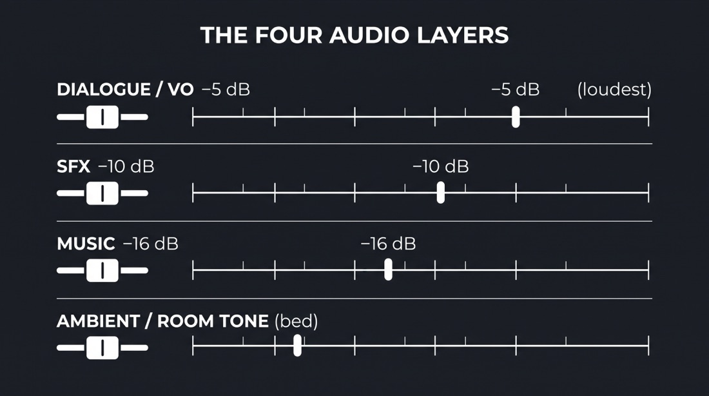
data-volume lineal (0–1) por capa en HyperFrames (narración 1.0 / música 0.05–0.18 / SFX 0.20–0.35 / flash 0.55–0.65, HARD RULE #9), un sistema de niveles distinto que convive con el de dB.La mezcla profesional se entrega en stems separados (diálogo / música / efectos / ambiente) y como M&E (Music & Effects, sin diálogo) — no como un solo archivo aplanado. El amateur exporta un único WAV/MP3 estéreo; cuando alguien pide "la versión sin voz para doblar a otro idioma" o "subí un poco la música", ya no puede: la información se perdió al aplanar. La entrega hay que arquitecturarla en capas desde el diseño, no rescatarla después.
Diegético vs no-diegético: de dónde "sale" cada sonido
Sonido diegético = existe dentro del mundo de la historia y los personajes lo oyen (una radio en la escena, pasos, un portazo). No-diegético = solo lo oye el espectador, no existe en el mundo (score orquestal, voz en off, stingers). La distinción no es académica: define cómo se procesa cada sonido. Lo diegético debe respetar la acústica del espacio — una voz en otra habitación se filtra (menos agudos + reverb del cuarto); música desde un teléfono se pasa por futz band-limited. Lo no-diegético suena "limpio y grande". Confundirlos rompe la inmersión sin que el espectador sepa nombrar por qué "suena falso".
Rainy alley at night, POV walking. Diegetic audio only: heavy rain on metal, footsteps splashing in puddles, distant thunder, a flickering neon sign buzzing. No music. Sound perspective matches camera — closer sounds louder, farther sounds quieter and slightly reverberant.
ffmpeg -i voice.wav -af "highpass=f=300, lowpass=f=3400, acompressor=threshold=-18dB:ratio=4:makeup=3" voice_phone_futz.wav
Room tone: la capa que ni sabías que faltaba
Nunca hay silencio digital absoluto en una escena real. El room tone es el sonido del silencio de un espacio: el zumbido tenue de una habitación vacía. Se graba obligatoriamente 30–60 s en cada locación, con todos quietos, y se tiende continuo por debajo del diálogo para rellenar pausas y pegar cortes y ADR. Es el error #1 del amateur: deja las pausas en silencio digital muerto (−∞ dBFS) y el oído lo detecta como "huecos" o "saltos" entre líneas — pero no sabe nombrar por qué suena amateur, porque le falta una capa que ni existía en su concepto de audio.
La cadena de voz: cómo se entiende una voz sin subir el volumen
La voz vive en bandas de frecuencia específicas, y cada problema de inteligibilidad tiene su banda y su fix. El orden de la cadena importa: HPF → corte de lodo → compresión → de-ess → realce de presencia → aire. Saber DÓNDE está cada atributo permite arreglar "no se entiende" sin tocar el fader (subir volumen solo tapa otras capas).
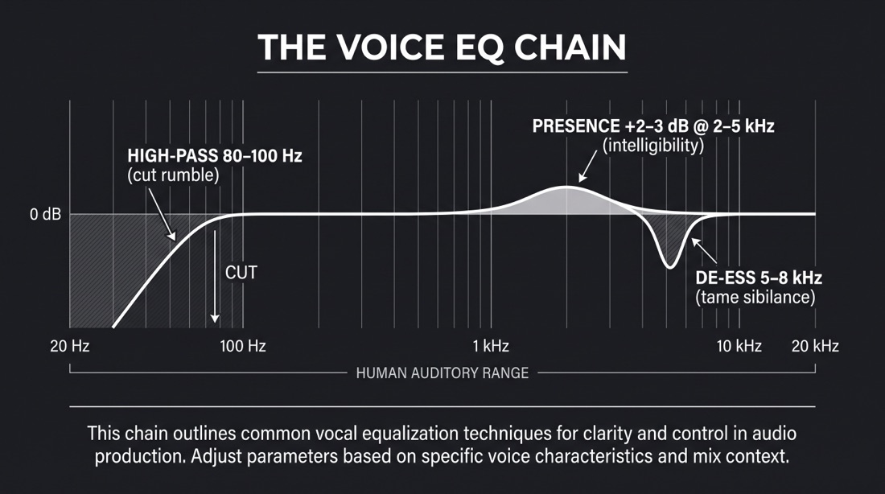
ffmpeg -i vo_raw.wav -af "highpass=f=90, equalizer=f=300:t=q:w=1.2:g=-3, equalizer=f=3000:t=q:w=1.5:g=2, deesser=i=0.4:f=0.35, loudnorm=I=-16:TP=-1:LRA=11" vo_processed.wav
Ducking: mantener la voz clara sin matar la música
El ducking (sidechain) baja automáticamente una capa — música o ambiente — cuando otra — la voz — suena, y la devuelve al nivel cuando la voz calla. Se implementa con un compresor sidechain (la voz "dispara" la compresión de la música) o con automatización manual. La cantidad de reducción y las curvas de attack/release definen si suena natural o "bombea".
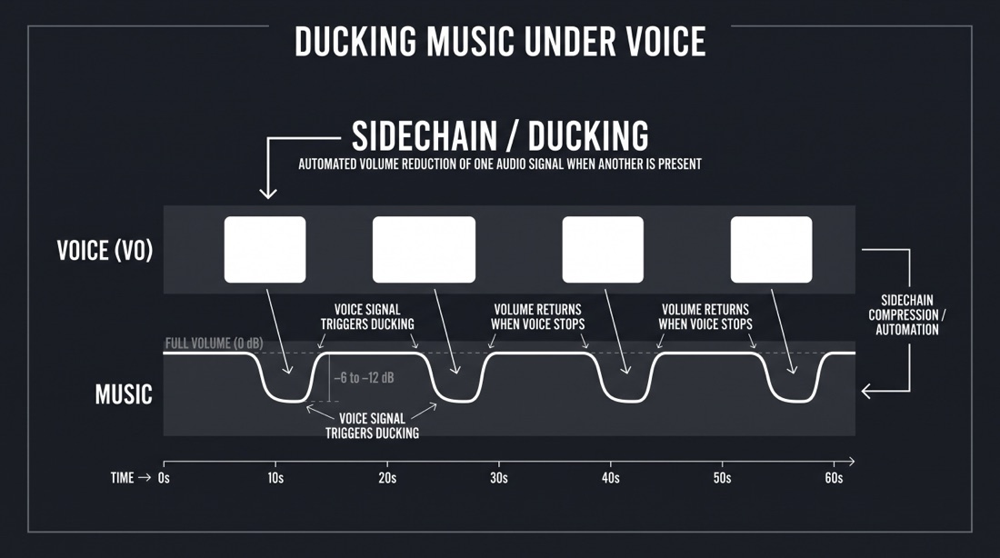
El ducking transparente de un score dramático bajo diálogo es apenas 1–4 dB, no 10+. Más de ~4-6 dB en score se oye como "bombeo" (pumping). La reducción grande (6–12 dB) es solo para camas musicales de ad/corporate bajo VO. El criterio depende del rol de la música (score narrativo vs cama de fondo), y la transparencia vive tanto en el attack/release como en la cantidad de dB. El amateur o no duckea nada (voz tapada) o duckea brutalmente (música que bombea) — sin saber que hay dos criterios distintos.
SFX-PIPELINE.md § Ducking con su helper GSAP duckOnNarration().Sincronía: audio y video no cortan en el mismo frame
Dos verdades que separan al montador profesional del novato. Primera: los J-cuts y L-cuts (split edits). El audio del plano saliente continúa sobre el entrante (L-cut) o el audio del entrante se adelanta a su imagen (J-cut) — un solape de ~6–24 frames. Son el pegamento invisible del montaje de diálogo: el corte seco simultáneo audio+video se siente mecánico y entrecortado. Segunda: la sincronía frame-accurate. El diálogo desincronizado aunque sea 1-2 frames se lee como "doblaje malo", y los efectos duros (portazo, golpe) deben caer en el frame del impacto o 1 frame antes — el oído tolera mejor el sonido un pelo temprano que tarde.
El nudo central: fader relativo ≠ loudness de entrega
Acá está la confusión que arruina más masters de lo que parece. Existen dos ejes de nivel distintos que operan en etapas distintas y no se contradicen:
Etapa 1 — balance (en el timeline). Los niveles de fader por capa (voz −5 / SFX −10 / música −16 dB) son valores relativos: definen la jerarquía entre capas para que la voz siempre gane. No dicen nada sobre qué tan fuerte suena el video en total.
Etapa 2 — entrega (el master final). Una vez balanceado el mix, el programa completo se mide y normaliza a un objetivo de loudness integrado según la plataforma: −14 LUFS. Ese número es el promedio de sonoridad percibida de todo el video, no un fader de capa.
En resumen: primero balanceas las capas entre sí (dB relativos), después llevas el conjunto al loudness de la plataforma (LUFS integrado). El −5/−10/−16 vive en la mesa de mezcla; el −14 LUFS vive en la exportación. Coexisten.
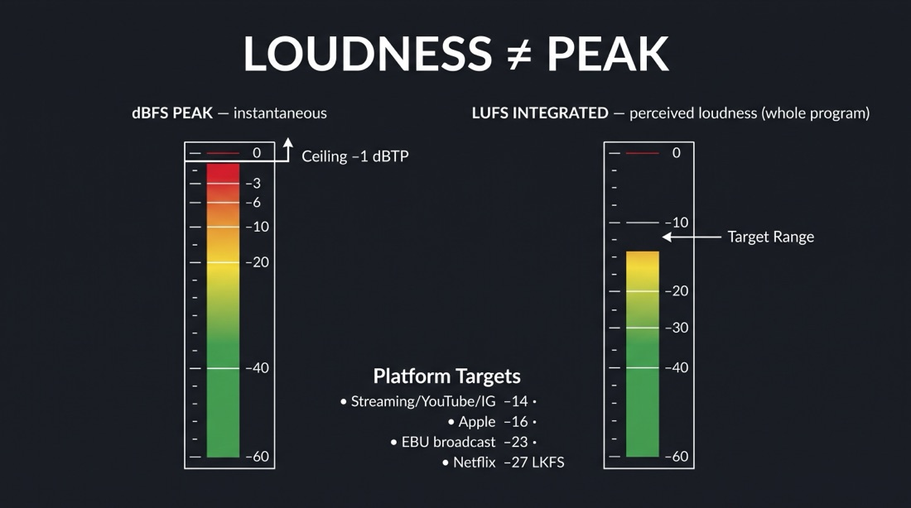
LUFS integrado ≠ dBFS de pico. Las plataformas normalizan por sonoridad percibida promediada (LUFS/LKFS, K-weighted, norma ITU-R BS.1770), no por el pico del fader. Puedes picar a −0.1 dBFS y sonar bajo, o picar a −6 y sonar más fuerte. El amateur solo ve el peak meter de su editor (dBFS instantáneo), sube el fader hasta "casi rojo" creyendo que maximiza — y la plataforma se lo baja igual. Hay que medir con un medidor de loudness integrado, no mirar el pico. Y ojo con el contraataque: TikTok e Instagram in-feed NO normalizan en la reproducción del scroll — el audio suena al nivel que llega, así que aplicar el "−14 de blogs de música" a un reel puede dejarlo más bajo que el feed. La regla depende de SI la plataforma normaliza en ese punto de reproducción.
scripts/master-audio.sh (loudnorm 2-pass, linear=true, salida AAC 192k con -c:v copy) y es el gate Q18 del pre-render-gate: si el LUFS no cae entre −14.5 y −13.5, bloquea el render. Casos disparadores: pueblo-fantasma-desierto v2 se publicó sin medir y se vio "apagado" al lado de la referencia. El doc autoritativo es AUDIO-MASTERING.md.# Pass 1 — medir (no aplica cambios): ffmpeg -i mix.wav -af loudnorm=I=-14:TP=-1:LRA=11:print_format=json -f null - # Pass 2 — aplicar con los valores medidos (linear=true preserva el feel): ffmpeg -i mix.wav -af loudnorm=I=-14:TP=-1:LRA=11:measured_I=<val>:measured_TP=<val>:measured_LRA=<val>:measured_thresh=<val>:offset=<val>:linear=true -c:v copy -c:a aac -b:a 192k mix_master.mp4
-stream_loop + fade-out; si generas un ambient con eventos distintos, el loop "salta" en la juntura.✅ Haz
- Separa siempre en 4 stems (diálogo / música / SFX / ambiente) y balancea con la voz al frente.
- Mide el loudness integrado con un medidor (loudnorm 2-pass), no mires solo el peak meter.
- Pon el techo del limiter en −1 dBTP (true peak), nunca en 0 ni −0.1.
- Tiende una cama de ambiente/room tone continua para que nada caiga a silencio digital.
- Duckea según el rol de la música: 6–12 dB para cama VO, 1–4 dB para score dramático.
- Elige el target de LUFS por destino: −14 social/streaming, −16 Apple, −23 broadcast.
❌ Evita
- Aplanar todo en una sola pista: pierdes el rebalanceo, el ducking y el M&E para doblaje.
- Subir el fader hasta "casi rojo" creyendo que maximiza — la plataforma lo normaliza igual.
- Dejar las pausas en silencio digital (−∞): se oyen como huecos.
- Duckear un score dramático 10+ dB: bombea. O no duckear nada: la voz se tapa.
- Cortar audio y video en el mismo frame en todo el montaje de diálogo (usa J/L cuts).
- Regenerar una sola frase de TTS: la deriva de timbre no pega con el resto del bloque.
Checklist de cierre
Subtítulos y captions
El oficio invisible del subtítulo: la velocidad de lectura en CPS, el timing con piso y techo, dónde se corta la línea, la posición dentro del safe area, el estilo legible sobre cualquier fondo y los captions kinéticos — todo bajo estándares broadcast/OTT (Netflix, BBC, EBU). Y el eje que el amateur ignora: la accesibilidad, donde subtítulo, CC y SDH son tres entregables distintos.
Al terminar este módulo vas a poder
- Medir el CPS de cada cue y rechazar los ilegibles, respetando los pisos y techos de duración (five-sixths de segundo a 7 segundos) en vez de "pegar la transcripción y ver que entre".
- Cortar líneas en el nodo sintáctico correcto, posicionar el caption dentro del safe area sin que la UI de la plataforma lo tape, y garantizar contraste sobre fondos difíciles.
- Producir con IA el flujo completo — transcripción, validación de CPS, burn-in con estilo profesional y captions kinéticos word-by-word — sabiendo dónde Whisper y ffmpeg lo rompen y cómo detectarlo.
La métrica no es "que quepa": es CPS
La primera decisión profesional de un subtítulo no es tipográfica, es aritmética. La métrica canónica es CPS (caracteres por segundo): el número de caracteres del cue dividido por su duración en pantalla. Se prefiere sobre las palabras porque es agnóstica al idioma a nivel de glifo. Un cue puede caber perfecto en dos líneas de 42 caracteres y aun así ser matemáticamente ilegible si su CPS es 28 — el espectador no termina de leer antes de que desaparezca. El amateur pega la transcripción, ve que "entra en pantalla" y da el trabajo por hecho; el profesional corre un contador de CPS sobre cada cue y rechaza, alarga o parte los que pasan el umbral.
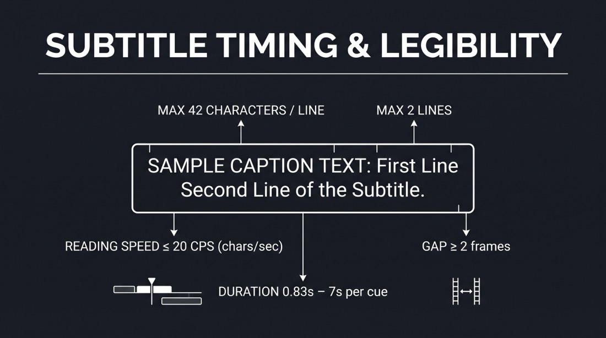
Hay un límite SUPERIOR de duración, no solo inferior. Dejar un subtítulo "colgado" 9 segundos es un error tan grave como uno de 0.4s: el ojo lo re-lee y se despega de la imagen. Intuitivamente "más tiempo = más fácil de leer", así que el amateur nunca sospecha que colgar el cue lo empeora — pero la six-second rule (Karamitroglou, 1998) dice lo contrario. Y del lado corto, un cue por debajo de 5/6 de segundo "flashea" ilegible. Un buen subtítulo vive en la ventana entre esos dos muros, con un CPS por dentro de 15–20: los tres números trabajan juntos.
large-v3 para mejor puntuación, que determina los cortes) sobre la pista de voz aislada — sin música ni SFX — para timestamps limpios, pidiendo SRT con 42 caracteres por línea y 2 líneas máximo. Esta es la base de cualquier subtítulo; genera timing por cue, no por palabra.whisper narracion.wav --model large-v3 --language Spanish --output_format srt --max_line_width 42 --max_line_count 2 --word_timestamps False -o captions/
# gate de CPS: imprime los cues que superan 17 CPS (alargar o partir)
python -c "import pysrt; s=pysrt.open('captions/narracion.srt'); [print(i+1, round(len(c.text.replace(chr(10),''))/((c.end.ordinal-c.start.ordinal)/1000),1)) for i,c in enumerate(s) if len(c.text.replace(chr(10),''))/((c.end.ordinal-c.start.ordinal)/1000)>17]"Dónde cortas la línea importa tanto como qué dice
El corte de línea y de cue no se hace donde "se llena la línea", sino en el nodo sintáctico más alto posible: después de puntuación, antes de conjunciones y preposiciones. Nunca se separa artículo+sustantivo, adjetivo+sustantivo, nombre+apellido, pronombre+verbo ni auxiliar+verbo. Cortar "la / mesa" o "no puedo creer que la / mesa" fuerza un reprocesamiento cognitivo que baja la comprensión medible, porque el ojo procesa el subtítulo como una unidad gramatical, no como una tira de caracteres. La forma preferida es una pirámide bottom-heavy: la línea inferior algo más larga que la superior.
El subtítulo no debe cruzar un corte de plano. Idealmente el in/out del cue se conforma al shot change (o deja ≥2 frames de margen); si un cue debe abarcar un corte, se mantiene mínimo ~12 frames a cada lado. Es una regla de montaje, no de texto: un subtítulo que persiste a través de un corte se percibe como texto "nuevo" y dispara una re-lectura perceptual (efecto flicker). El amateur piensa el subtítulo como una capa independiente del corte de cámara, y ningún generador automático respeta el shot-change por defecto — hay que conformarlo a mano.
Tres entregables distintos: subtítulo, CC y SDH — y burned vs soft
Antes del estilo hay dos decisiones arquitecturales. La primera: burned (open, quemados sobre los píxeles, no se apagan) vs soft (closed, archivo separado SRT/VTT/EBU-TT que el reproductor renderiza y el usuario puede desactivar). Social/IG/TikTok y VSL van burned — control tipográfico total y siempre visibles sin sonido; broadcast/OTT y accesibilidad legal van soft, porque el usuario elige y en muchos países es requisito. La segunda: subtítulo ≠ CC ≠ SDH. El subtítulo lleva solo el diálogo y asume que el viewer oye. El CC (closed captions) es la transcripción completa del audio — diálogo + efectos + música + identificación del hablante — pensado para personas sordas, con el legado técnico de 32 caracteres por fila (CEA-608). El SDH (subtitles for the deaf and hard-of-hearing) es el híbrido moderno: estilo subtítulo (42 caracteres, fuente proporcional) enriquecido con información no verbal — [música tensa], [pasos], nombre del hablante. Un cliente que pide "captions accesibles" necesita SDH/CC, no subtítulos de diálogo: confundirlos es un fallo de compliance.
Para un amateur "subtítulos" y "captions" son sinónimos; en realidad son tres entregables con reglas de compliance distintas. Un entregable accesible exige speaker ID y descripciones de sonido no verbal ([puerta que cruje], [música tensa]) — no solo el diálogo. Y el CC legacy vive en una grilla de 32 caracteres, no de 42. Entregar subtítulos de diálogo cuando el cliente pidió accesibilidad no es un detalle de estilo: puede ser incumplimiento legal.
Dónde vive el texto: safe zones y posición
El subtítulo vive en el tercio inferior, pero dentro del safe area, nunca en el borde extremo. La convención BBC lo mantiene dentro del 90% central vertical y el 75% central horizontal en 16:9; el broadcast clásico usa 90% action-safe / 80% title-safe. Fuera de esa zona, dos cosas lo arruinan: el overscan de televisores viejos recorta el borde, y la UI nativa de la plataforma (la barra de likes/compartir de IG/TikTok, la barra de progreso de YouTube) tapa el borde inferior. En vertical 9:16 el margen inferior debe subir a un lower-third alto (~Y62–66%) para esquivar esa UI — y nunca a la altura de la boca del hablante.
bottom 540px en IG Reel, 380px en YouTube Short y centrado en IG Story; el loading bar a 700px y los name labels a 220px del top. Y hay una regla permanente: el caption nunca a la altura de la boca — se verifica mirando frames, no confiando en "más abajo". Todo en ai-video-production/CAPTIONS.md § Posicionamiento y RETENTION-RULES.md.Contraste: que el blanco no desaparezca sobre el cielo
Un subtítulo blanco sobre cielo, nieve o pared clara desaparece si no tiene contraste garantizado. Hay tres técnicas y una jerarquía clara: drop shadow suave + outline fino gana; la caja translúcida es el fallback más seguro sobre fondo caótico; el stroke grueso pierde, porque "engorda" la letra y come su forma, bajando la legibilidad. El instinto amateur es subir el grosor del contorno hasta que "se vea" — empeorando exactamente lo que quería arreglar. El default profesional es fuente sans-serif proporcional, blanca, con sombra suave y contorno fino, y caja solo cuando el fondo es impredecible.
El font-size del subtítulo es relativo, no un valor en px fijo. El amateur setea "48px" porque "se ve bien en mi pantalla"; no sabe que la industria define el tamaño por conteo de caracteres relativo a la resolución (Netflix directamente prohíbe px y exige %). Un subtítulo hardcodeado en px se rompe apenas cambia el aspecto o la resolución. Misma lógica invisible que el contraste: no es que "quede lindo", es que la jerarquía shadow > outline fino > box y el tamaño relativo son reglas, no gustos.
-webkit-text-stroke de 12px es look amateur/CapCut-2010, el drop-shadow es cinematic-2025. Se admite un stroke negro fino de 1.5–3px como seguridad adicional sobre fondos claros, nunca como efecto principal. Y hay un sistema de 3 clases con tamaños exactos: caption-name 110px monospaced, caption-narration 78px Montserrat 900 (~Y65%), caption-warning 90px rojo con glow. Todo en ai-video-production/CAPTIONS.md § Sistema de 3 clases.MarginV (posición). Alignment=2 (centrado abajo) y un MarginV alto suben el texto al lower-third alto que esquiva boca y UI; Outline fino + Shadow suave, no stroke grueso. Después lo quemas con el filtro subtitles de ffmpeg.--diarize etiqueta quién habla (SPEAKER_00/01); mapeas a nombres reales y agregas a mano las cue de sonido no verbal ([pasos que se acercan], [música tensa]), manteniendo 42 caracteres y 2 líneas. Ahí es donde un subtítulo simple se convierte en SDH de verdad.ffmpeg -i video.mp4 -vf "subtitles=captions.srt:force_style='FontName=Arial,Fontsize=42,PrimaryColour=&H00FFFFFF,OutlineColour=&H00000000,BorderStyle=1,Outline=2,Shadow=2,Alignment=2,MarginV=700'" -c:a copy salida.mp4
Captions kinéticos: el subtítulo que baila con la voz
El look dominante en reels es el caption kinético / karaoke: cada palabra se ilumina o aparece exactamente en su timestamp. Requiere timestamps a nivel de palabra (word-level), no a nivel de cue — y ahí está la trampa técnica. El SRT estándar solo tiene timing por cue, así que es imposible hacer kinético con él. Whisper "crudo" tampoco alcanza: da ~±500 ms a nivel de palabra, suficiente para que el resalte se desincronice visiblemente y se vea "barato". El camino correcto es WhisperX, que transcribe con faster-whisper y luego re-alinea cada palabra con un modelo fonémico wav2vec2 (forced alignment), llegando a ~±50 ms. Con ese JSON de palabras alimentas una animación (ASS con --highlight_words, o una timeline propia en HyperFrames/GSAP). No es un filtro mágico: es word-timing preciso convertido en animación.
--highlight_words para exportar directo un ASS estilo karaoke, o pide el JSON de palabras con start/end para animarlas tú mismo. Es el único camino técnico que "snappea" a la voz por debajo de 100 ms.start exacto (position params = timestamps), la activa en amarillo y el resto en blanco, y lo renderizas con alpha para overlay sobre el video. El look reels se construye así, no con un preset.whisperx narracion-2x.wav --model large-v3 --language es --align_model WAV2VEC2_ASR_LARGE_LV60K_960H --highlight_words True --output_format ass -o captions/
word_timestamps=True y language='es'; y el caption chunkea toda la narración del clip en cues progresivos word-timed (típico intro: 3 frases), nunca un bloque estático que se trunca a la primera frase. Además el -t (offset del bloque en el timeline) es obligatorio, y hay que eliminar los opacity:0 intermedios entre frases o aparecen gaps de 0.3–0.6s sin caption. Nunca hand-timing. En ai-video-production/CAPTIONS.md y scripts/captions.py.✅ Haz
- Corre un contador de CPS sobre cada cue y rechaza los que pasan 17–20; alarga o parte en dos.
- Respeta los dos muros de duración: piso 5/6 de segundo, techo ~6–7s; y ≥2 frames de gap entre cues.
- Corta la línea en el nodo sintáctico (nunca artículo+sustantivo) y conforma el in/out al corte de plano.
- Posiciona en el safe area (90%/75%) y en 9:16 sube a ~Y62–66%; garantiza contraste con shadow suave + outline fino, o caja sobre fondo caótico.
- Para kinético usa WhisperX (±50 ms) sobre el audio ya acelerado, y elige SDH/CC cuando el pedido es accesibilidad.
❌ Evita
- Pegar la transcripción y darla por legible "porque entra en pantalla" sin medir CPS.
- Dejar un cue colgado 8–9s (se re-lee) o flashear uno por debajo de 5/6 de segundo.
- Engrosar el stroke hasta que "se vea": come la forma de la letra y baja la legibilidad.
- Pegar el caption al borde inferior o a la altura de la boca — lo tapa la UI y el overscan.
- Hacer kinético con Whisper vanilla o alinear sobre el TTS crudo a 1x: el resalte se desincroniza toda la pieza.
Checklist de cierre
VFX y postproducción / finishing
El orden sagrado del finishing, el color management, el chroma subsampling, el bit-depth y las specs de export: cómo se termina y entrega un video sin degradarlo. El amateur exporta un solo MP4 y lo trata como su archivo maestro; el profesional mantiene un master intocable y genera cada deliverable desde ahí. Este módulo es la disciplina de ese último tramo.
Al terminar este módulo vas a poder
- Ejecutar el pipeline de finishing en su orden irreversible (edit-lock → conform → color → mezcla → títulos/VFX → master → delivery) y entender por qué cambiar el orden multiplica el trabajo.
- Elegir codec, chroma subsampling y bit-depth correctos para cada etapa: masterizar alto (ProRes 4:2:2 10-bit) y bajar a 4:2:0 8-bit recién en el export final.
- Aplicar color en el orden correcto (transform técnico → balance → look) leyendo scopes en vez del monitor, y sumar film emulation (grain + halation) como último paso a resolución nativa.
- Exportar deliverables a las specs de cada plataforma (YouTube, Instagram Reels) desde un único master, sin acumular pérdida generacional.
El finishing es una secuencia sellada, no una timeline donde todo pasa a la vez
El error estructural del amateur no es una decisión mala: es hacer todo a la vez en una sola timeline — pone un LUT, agrega grano, mueve un corte, sube la música — y cada cambio rompe lo anterior. El profesional ve el finishing como una serie de etapas selladas con "locks", en un orden que no es arbitrario sino una ley física del pipeline.
El orden canónico es: (1) picture/edit lock — se congela el corte, ya no se toca duración ni orden de clips → (2) conform/online — se relinkea a la media full-res → (3) color grade → (4) sound mix, contra la imagen ya cortada → (5) títulos + motion graphics + VFX → (6) master, un archivo de altísima calidad casi sin comprimir → (7) delivery, las versiones comprimidas por plataforma. El grano y la halation se aplican al final, después del grade, a resolución nativa.
Por qué ese orden y no otro: mezclar audio antes del edit-lock obliga a re-mezclar cada vez que se mueve un corte; colorear después de quemar los títulos contamina el grade; comprimir el master hace que cada re-export pierda calidad. Cada regla del pipeline existe para no rehacer trabajo.
El ORDEN del finishing es una ley física, no una preferencia de estilo. El grain y la halation van AL FINAL (después del grade); el color va después del edit-lock; el audio se mezcla contra el corte cerrado. Cambiar el orden no "queda distinto": multiplica el trabajo o contamina etapas. El amateur hace todo simultáneo en una timeline y cada ajuste deshace el anterior — nunca vio el pipeline como etapas con locks entre sí.
Offline vs online: por qué el edit-lock es sagrado
El offline es el corte creativo hecho con proxies o media de baja resolución — rápido y liviano. El online/conform relinkea ese corte a la media original full-res usando una lista de decisiones (EDL/XML/AAF) para el finishing. Esa lista describe cada corte por timecode: por eso, si el corte cambia después de conformar, hay que re-conformar todo. El "edit lock" no es burocracia — es lo que permite que color, VFX y sonido trabajen en paralelo sobre una base que no se mueve.
Intra-frame vs inter-frame: por qué ProRes es para editar y H.264 para entregar
Los codecs intra-frame (ProRes, DNxHR, All-Intra) comprimen cada frame de forma independiente: cada frame es un keyframe completo (I-frame). Los inter-frame (H.264/H.265) usan GOP (Group of Pictures): un I-frame seguido de P-frames y B-frames que solo guardan las diferencias respecto a frames vecinos. Por eso ProRes es el formato de masters y edición — cada frame decodifica solo, el scrubbing y el corte son frame-exactos y no hay acumulación de artefactos — y H.264/H.265 es de delivery: mucho más chico, pero pesado de editar y frágil ante recompresión. Un corte que cae en medio de un GOP obliga al codec a recalcular frames.
El master NUNCA se comprime con H.264. Se archiva en ProRes 422 HQ (o DNxHR / 4444) y de ahí salen todos los MP4. Editar o re-exportar desde un H.264 acumula pérdida generacional: cada pasada por un codec inter-frame degrada. El amateur exporta el MP4 de YouTube y ESE es su "archivo maestro"; cuando le piden la versión para Instagram, recomprime ese MP4 → doble pérdida. No sabe que ProRes existe, o cree que "pesa demasiado para nada".
Chroma subsampling: cuánto color puede tirar cada etapa
El chroma subsampling es el ratio de muestreo de la información de color (croma) relativa al brillo (luma). El ojo es mucho menos sensible al color que al brillo, así que se descarta croma para ahorrar datos: 4:4:4 guarda color en cada píxel, 4:2:2 lo muestrea a la mitad horizontal, 4:2:0 a la mitad horizontal y vertical (tira ¾ de la info de color). La regla del pipeline: se maestriza alto (4:2:2 o 4:4:4) y se baja a 4:2:0 recién en el export final.
El chroma 4:2:0 hace imposible un buen chroma key o un grade pesado. Para VFX/keying/graphics necesitas 4:2:2 o 4:4:4 en origen — no se recupera color que el codec ya tiró. El amateur graba o genera en H.264 4:2:0 y después se pregunta por qué el fondo verde tiene bordes sucios y el cielo hace banding al colorear. El daño ya está hecho en la captura o en la generación, no en el grade.
Bit-depth: por qué se colorea en 10-bit aunque el final sea 8-bit
El bit-depth es la cantidad de niveles por canal de color: 8-bit = 256 niveles/canal (~16.7M colores), 10-bit = 1024 niveles (~1.07 mil millones), 12-bit = 4096 niveles. Más bit-depth = gradientes más suaves y más latitud para empujar la imagen. Esto es física de color, no criterio: estirar curvas o contraste sobre 8-bit produce banding (escalones visibles en cielos y degradés); sobre 10-bit no, porque hay headroom para el push antes de bajar a 8-bit.
El bit-depth extra es headroom de trabajo, no de entrega. El amateur ve "8-bit vs 10-bit" como un número del export y elige 8 porque "el final es 8". No entiende que el daño (banding) se hace DURANTE el grade, no en el export: el 10-bit existe para sobrevivir el proceso de estirar la imagen, y recién al final se baja a 8-bit ya con el degradé roto en niveles suficientes.
Color en el orden correcto: transform técnico → balance → look
Acá vive uno de los errores más caros. El material grabado en Log (S-Log3, C-Log, LogC, V-Log) preserva el máximo rango dinámico en un archivo lavado y desaturado — es un contenedor de datos para colorear, no un look, y por eso "se ve mal" crudo y NUNCA se entrega en Log. Para trabajarlo hay que aplicar primero el transform técnico correcto (un LUT técnico Log→Rec.709, es decir un IDT/ODT) que lo lleva a un espacio manejable. Un LUT creativo (el "look cinematográfico" descargado) es otra cosa: imprime una estética y asume una imagen ya balanceada en un espacio específico.
El orden correcto, en nodos no destructivos: transform técnico → balance de blancos/exposición → look (LUT creativo) → trims. El amateur tira un LUT de moda como primer y único paso sobre cualquier footage y colorea encima destructivamente — y el resultado se rompe porque el LUT recibió una imagen que no era la que esperaba.
Los scopes no mienten (el monitor sí)
El monitor engaña — brillo, calibración, luz de la sala. Los scopes son instrumentos objetivos: el Waveform mide luminancia/exposición (0–100 IRE), el RGB Parade muestra rojo/verde/azul por separado (balancear blancos = alinear los tres canales en los grises), el Vectorscope muestra saturación y tinte, con una skin-tone line a ~123° contra la que deben caer los tonos de piel. El profesional balancea mirando el parade y chequea skin tones contra su línea; el amateur lo hace "a ojo" sobre un monitor que le miente.
caption-wrap vive en bottom:540px; height:280px (≈ Y62%), la loading-bar en la banda Y44–51%, y el name-label en top:220px (Y11.5%). Están en formats/reel.md § UI Safe Zones y las verifica el gate audit-ui-safe-zones.py, que lee las bandas F1 desde lib/empirical_bands.py — no hardcodea la Y. Nota de coherencia: el doc expresa las zonas en píxeles absolutos sobre canvas 1920, mientras que HARD-RULES da el %; si cambia la resolución, traduce a % antes de reusar..cube 3D de 33 puntos), después el look. En ffmpeg con lut3d; en DaVinci con nodos (nodo 1 = IDT/transform, nodo 2 = balance, nodo 3 = look). Balancea alineando el RGB parade y chequeando skin tones contra la línea del vectorscope.ffmpeg -i slog3_source.mov -vf "lut3d=file=SLog3_to_Rec709.cube, lut3d=file=creative_look.cube" -c:v prores_ks -profile:v 3 graded.mov
Film emulation: grain y halation, siempre al final
El film grain es la textura estructurada del film fotoquímico (cristales de haluro de plata), orgánica y de tamaño consistente por stock (35mm fino, 16mm grueso). No es lo mismo que el noise digital, que es ruido estocástico del sensor y se considera defecto. El grain se AGREGA en post como textura deseable, a resolución nativa del master y como último paso: unifica planos de distinta procedencia (cámara + VFX + IA), disimula banding y artefactos de compresión, y da cohesión orgánica.
La halation es otro fenómeno del film: la luz de las altas luces atraviesa la emulsión, rebota en la base del film y vuelve golpeando primero la capa roja → un glow rojizo/anaranjado alrededor de bordes de alto contraste (ventanas, prácticas, piel brillante). Es la diferencia sutil entre "digital limpio" y "orgánico/fílmico", y un DP la pide por nombre.
La halation ≠ bloom/glow. La halation es un glow rojo/naranja específico del film (rebote de luz en la base que golpea primero la capa roja); el bloom es glow blanco de lente/difusión. Un colorista pide "un toque de halation en las prácticas", no "ponle glow". El amateur solo conoce el "glow" genérico y aplica un bloom blanco uniforme que se ve digital, de videojuego — nunca escuchó la palabra halation ni sabe que el color del glow importa. Además, sorpresa contraintuitiva: el grain bien puesto mejora la compresión percibida, porque rompe los degradés lisos donde el codec hace banding y le da al ojo textura que enmascara artefactos.
screen/add con mix ~10–30%, antes del grain y después del grade. Grain como último filtro, a resolución nativa.ffmpeg -i graded.mov -filter_complex "[0:v]split=2[base][hi]; [hi]lutrgb=r='if(gt(val,200),val,0)':g='if(gt(val,200),val*0.4,0)':b='if(gt(val,200),val*0.2,0)',gblur=sigma=18[glow]; [base][glow]blend=all_mode=screen:all_opacity=0.25" -c:v prores_ks -profile:v 3 halation.mov
Estabilización, speed ramps y upscaling: los que se deciden antes de post
Tres operaciones donde la decisión clave sucede antes del finishing. Estabilización: hay que corregir el rolling shutter (el "jello" de sensores CMOS) ANTES de estabilizar, o la distorsión se amplifica; y todo estabilizador cobra un "impuesto de crop" de 5–10% — reservas ese margen o aparecen bordes negros. Slow-motion "real": se decide EN LA CAPTURA — para 2.5× a un timeline de 24 fps grabas a 60 fps, para 5× a 120 fps. Sin frames reales solo hay interpolación, que es plan B. Upscaling e interpolación con IA (Topaz, RIFE) reconstruyen detalle/frames plausibles, pero fallan predeciblemente en texto, patrones finos y movimiento con oclusión.
El slow-motion "real" se decide en la captura, no en post. La interpolación por IA/optical flow es un plan B que falla de forma predecible: en movimiento con oclusión (piernas cruzándose, agua, partículas) aparece el "morphing". El amateur graba a 24/30 y espera "ralentizarlo en el editor" sin fantasmas — no sabe que sin frames reales solo hay reconstrucción, ni cómo calcular el fps de rodaje según el factor de slow deseado. La misma trampa aplica al upscaling con IA: reconstruye detalle plausible, pero hay que verificarlo frame a frame en las zonas de movimiento rápido.
El export: un master, muchos deliverables
El master es el archivo de finishing de máxima calidad, casi sin comprimir (ProRes 422 HQ / 4444 o DNxHR), del que se derivan TODOS los deliverables comprimidos. Se archiva el master, no el MP4 de YouTube. Cada plataforma tiene su spec de export, y la disciplina es masterizar una vez y bajar a cada formato desde ahí — nunca recomprimir un deliverable para hacer otro.
yuv422p10le, audio PCM) → de ahí, un H.264 High yuv420p CRF ~18, GOP ~2 s (-g 48), +faststart para YouTube; y un H.264 1080×1920 exacto ~10 Mbps para IG. Nunca recomprimas un deliverable para generar otro.ffmpeg -i timeline_export.mov -c:v prores_ks -profile:v 3 -pix_fmt yuv422p10le -vendor apl0 -c:a pcm_s24le master_422HQ.mov
ffmpeg -i master_422HQ.mov -c:v libx264 -profile:v high -pix_fmt yuv420p -preset slow -crf 18 -g 48 -keyint_min 48 -movflags +faststart -c:a aac -b:a 384k -ar 48000 youtube_1080p.mp4
formats/reel.md: 9:16 1080×1920, 30 fps, H.264 High L4.0 yuv420p, audio AAC-LC 48 kHz, video 3–5 Mbps (target ~4 con CRF 18), archivo <100 MB (ideal 40–60 MB). El master de audio va a −14 LUFS ±0.5 vía scripts/master-audio.sh (gate Q18 del pre-render). Se verifica con ffprobe -show_entries stream=codec_name,profile,r_frame_rate,sample_rate,width,height. Ojo con un gap conocido del sistema: QA.md menciona ≤650 MB (draft para iterar) mientras reel.md exige <100 MB (entregable final) — son dos límites para etapas distintas, no una contradicción.El shift de gamma y los halos de compositing: bugs de flags, no de color
Dos "problemas de color" que en realidad son de metadata. El shift de gamma (negros lavados o aplastados al pasar el video entre apps — el clásico bug de QuickTime en Mac) viene de confundir full range (0–255) con video/legal range (16–235) y la gamma 2.2 vs 2.4 de Rec.709. No es que "el color se rompió": es un flag de rango mal etiquetado que cada app interpreta distinto. Y en compositing, los halos oscuros o claros alrededor de un elemento pegado vienen del manejo de alpha premultiplicado vs straight: hay que des-premultiplicar antes de colorear un elemento y re-premultiplicar antes del "over". El amateur culpa al codec, al monitor o a la "baja calidad" del asset — cuando la causa es una operación matemática con nombre y solución.
✅ Haz
- Respeta el orden del pipeline: edit-lock → conform → color → mezcla → títulos/VFX → master → delivery.
- Masteriza en ProRes intra-frame (4:2:2 10-bit) y saca cada deliverable desde ese master, una sola vez por plataforma.
- Colorea en 10-bit aunque entregues en 8-bit, y baja a 4:2:0 recién en el export final.
- Aplica color en orden: transform técnico (Log→709) → balance → look, en nodos no destructivos.
- Balancea con scopes (RGB parade + vectorscope skin-tone line), no a ojo sobre el monitor.
- Aplica grain y halation al final, a resolución nativa, con mix sutil (grain 8–25%, halation ≤30%).
❌ Evita
- Tratar el MP4 de YouTube como tu archivo maestro y recomprimirlo para hacer la versión de IG.
- Tirar un "LUT cinematográfico" como primer y único paso sobre Log crudo o Rec.709 mal balanceado.
- Grabar/generar en 4:2:0 y después pretender un buen chroma key o un grade pesado.
- Confundir halation (glow rojo/naranja del film) con bloom (glow blanco de lente).
- Estabilizar antes de corregir rolling shutter, o no reservar el 5–10% de crop.
- Esperar slow-mo sin fantasmas de un clip grabado a 24/30 fps: el slow real se decide en la captura.
Checklist de cierre
Entrega, seguridad y legal
El gate final. Specs por plataforma, seguridad fotosensible, etiquetado de contenido sintético, accesibilidad y derechos. Todo lo que impide que un video listo se caiga al publicarlo — o que te lo bajen, te lo silencien o te lo demanden después.
Al terminar este módulo vas a poder
- Exportar al spec correcto de cada plataforma (resolución, codec, bitrate, tamaño, loudness) sin adivinar.
- Correr un gate de seguridad fotosensible antes de publicar cualquier flash o strobe.
- Etiquetar contenido sintético según Meta/TikTok/YouTube y el EU AI Act, y firmar procedencia con C2PA.
- Validar accesibilidad (contraste de captions, audiodescripción) y limpiar derechos de música e imagen.
Publicar es un gate, no un botón
Un video puede estar terminado en lo creativo y aun así caerse al publicarlo: lo rechaza el encoder de la plataforma, lo recomprime hasta convertirlo en papilla, lo baja el filtro de contenido sintético, lo reclama el dueño de una canción, o — el peor caso — dispara una convulsión en alguien. Este módulo es el checklist de compliance que corre después de que el video "está bueno" y antes de que salga.
La diferencia con los módulos anteriores: acá casi nada es criterio o estilo. Son umbrales objetivos y, en varios casos, obligaciones legales. Se miden, no se opinan.
ffmpeg -ss … -frames:v 1) y contando transiciones a blanco; mitígalo regenerando con prompt de flash único o rehaciendo el destello a mano en post.POV first-person, dark abandoned corridor. A single lightning flash blooms once through a far window, then fades over ~0.5s — one discrete event, not a repeating strobe. Handheld micro-shake, cold moonlight key 5600K, deep shadows. No flickering, no rapid repeated flashes.
0.55–0.65 (mix canónico) y suele ir con camera-shake. Ese combo es potente y también es el punto ciego de seguridad: hoy ningún gate cuenta los flashes. Antes de mandar a render, extrae los cuadros del tramo del flash y verifica que no haya más de 3 transiciones a blanco por segundo. Es un chequeo manual hasta que exista un audit-flash-rate dedicado.Specs por plataforma — el encoder no perdona
Cada destino tiene un contrato técnico. Si no lo cumples, la plataforma recomprime de más (banding, bloque, audio sucio) o directamente rechaza el archivo. No inventes cifras: exporta contra el spec del formato activo y verifica el archivo final con ffprobe antes de subir. El Reel es el combo más validado del sistema; el resto de formatos comparte la lógica pero cambia los números.
scripts/master-audio.sh a −14 LUFS ±0.5, y las specs del contenedor se verifican con ffprobe -show_entries stream=codec_name,profile,r_frame_rate,sample_rate,width,height (receta de formats/reel.md). Para footage editorial ya grabado la mezcla va por capas en dB — voz −5 / SFX −10 / música −16 — y recién el master global la lleva a −14 LUFS. No confundas las dos escalas: data-volume 0–1 es para el video IA en HyperFrames; los dB de timeline son para edición de footage.Etiquetado de contenido sintético — obligatorio, no opcional
Todo el pipeline es IA, y varios entregables son ads comerciales publicados. Eso activa obligaciones concretas: Meta, TikTok y YouTube exigen etiquetar el contenido realista como "AI-generated / altered" (desde 2024); en YouTube es un toggle de "altered or synthetic content" al subir. En la UE, el Art. 50 del AI Act obliga a declarar los deepfakes y el contenido sintético con transparencia. Y por encima de la etiqueta de plataforma está la procedencia C2PA / Content Credentials: metadata firmada que viaja con el archivo diciendo cómo se hizo. No etiquetar arriesga takedown, shadowban o multa regulatoria.
Lower-corner disclosure chip on a video frame, small rounded pill, semi-transparent dark background, crisp legible sans-serif text reading exactly "Contenido generado con IA". High contrast white text, sharp edges, no distortion, no gibberish characters. 1080x1920 vertical, chip anchored bottom-left inside safe zone.
El thumbnail y el título son el verdadero "hook cero": gobiernan las impresiones — cuánta gente ve tu video existir — antes de que la retención importe siquiera. Puedes tener el mejor primer segundo del mundo y no servir de nada si nadie hace clic. En YouTube el thumbnail es 1280×720 (16:9), mínimo 640px de ancho, menos de 2 MB, JPG/PNG. El amateur pule los primeros 3 segundos; el profesional sabe que el packaging precede al hook.
El mismo archivo se ve distinto según la pantalla. Modelos como Luma Ray3 ya generan HDR nativo de 16-bit; si entregas ese material sin metadata (MaxCLL/MaxFALL) ni un tone-mapping HDR→SDR, se ve lavado o quemado en la mayoría de los teléfonos, que son SDR. HDR y SDR no son "más lindo/menos lindo": son dos sistemas de referencia (nits, PQ/HLG) y hay que hacer el pase de uno al otro a propósito. Un grade que se ve perfecto en tu monitor puede estar roto en el feed real.
Accesibilidad — legible no es lo mismo que presente
Que un caption exista y diga lo correcto no significa que se pueda leer. Sobre un cielo, nieve o un fondo caótico, un texto sin caja ni contorno desaparece. La accesibilidad tiene umbrales objetivos: contraste de texto y, para broadcast/OTT, pista de audiodescripción (narración de la acción visual en los huecos de diálogo, WCAG 1.2.5 / requisito FCC). El sistema valida los captions por estética — drop-shadow gana a stroke grueso — pero eso es look, no accesibilidad medida.
Un caption puede estar presente, ser correcto, estar bien tipografiado — y ser ilegible. "Legible" es una medición contra un fondo, no un atributo del texto. La trampa: revisas el caption sobre un frame oscuro y se ve perfecto, pero el mismo caption sobre el frame de nieve/flash del segundo siguiente cae por debajo de 4.5:1. Verifica el contraste contra el peor fondo del tramo, no contra uno favorable.
Timecode y sync — la matemática invisible del conform
Cuando ensamblas clips de distinto origen (y más aún en el ensamblaje atómico per-clip del sistema), el timecode importa. A 29.97 fps se usa drop-frame timecode para que la numeración siga al reloj real. Confundirlo con non-drop desvía el tiempo y rompe el sync A/V a lo largo del video.
Derechos — lo que se publica se puede reclamar
Los ads (German, Caro, Mamá) se publican comercialmente, así que el riesgo de derechos es económico y directo. Música comercial necesita dos licencias: sync license (para acoplarla a imagen) y master license (para usar esa grabación específica). Las librerías como Epidemic Sound o Artlist resuelven ambas dentro de su suscripción, pero solo dentro del scope de su término — léelo. Además: derechos de imagen/likeness de personas identificables, y marcas registradas que aparezcan en cuadro. Usar una canción popular "porque queda bien" sin sync license es un strike, un reclamo de copyright o una demanda esperando a pasar.
Instrumental cinematic tension bed for a 60s vertical ad, 90 BPM, dark ambient pads with a soft pulse, no melody hooks that distract from voiceover, clean loop points, mixed to sit at -16 LUFS under narration. Original composition, no recognizable riffs.
✅ Haz
- Cuenta los flashes cuadro por cuadro antes de publicar cualquier destello o strobe.
- Verifica el archivo final con
ffprobecontra el spec exacto del formato (codec, fps, resolución, tamaño). - Masteriza a −14 LUFS ±0.5 y valídalo, no lo asumas.
- Activa el toggle de contenido sintético en cada plataforma y firma con C2PA.
- Chequea el contraste del caption contra el peor fondo del tramo (≥4.5:1).
- Usa música con sync + master license aclaradas (librería con scope o composición original).
❌ Evita
- Pedirle "strobe / flashing lights" a un modelo y publicar lo que devuelva sin medir el flash-rate.
- Generar en 16:9 para recortar a 9:16 — pierdes sujeto y headroom.
- Subir el render intermedio "tal cual sale del modelo" (8-bit 4:2:0 + recompresión = banding).
- Confiar solo en la metadata C2PA: la recompresión y la subida la borran.
- Validar captions por estética y saltear el umbral de contraste.
- Usar una canción comercial sin sync license "porque es solo un reel".
Checklist de cierre
Todo junto en el pipeline de producción con IA
Capstone. No hay estándares nuevos acá: hay un mapa. Cómo cada regla que aprendiste en el curso — encuadre, luz, sonido, color, ritmo — se materializa en un pipeline real por checkpoints, de los anchors al render, y cómo un doble gate de calidad decide si el video sale o vuelve a iterar.
Al terminar este módulo vas a poder
- Recorrer el pipeline completo por checkpoints (CP1 anchors → CP2 script → CP3 imágenes → CP4 animación → CP5 render) y saber qué estándar del curso vive en cada uno.
- Leer las reglas duras del sistema (mezcla, LUFS, cuts/min, safe zones, captions Whisper) como la manifestación operativa de los principios de cine, no como caprichos de configuración.
- Aplicar el doble gate de calidad — Gemini holístico ≥9.7 más audit-against-referent ≥85% de métricas críticas — y entender por qué ninguno de los dos alcanza solo.
Del oficio al pipeline: el curso entero en cinco estaciones
Los módulos anteriores enseñaron principios de cine uno por uno. Este módulo los conecta en la línea de producción real. La idea central del capstone: cada estándar profesional deja de ser teoría y se convierte en un paso concreto con un número verificable. La regla de los tres puntos de luz se vuelve un bloque de prompt; la mezcla por capas se vuelve un valor de data-volume; el loudness de la industria se vuelve un target de ffmpeg; el ritmo de montaje se vuelve un rango de cuts por minuto que un script mide solo.
El pipeline avanza en cinco checkpoints. No es una recomendación de orden: es una arquitectura por etapas donde cada checkpoint produce un artefacto verificable antes de habilitar el siguiente. Se avanza CP por CP porque la fase más cara — animar con IA — no rescata errores de diseño: hay que llegar con la base sólida antes de gastar el presupuesto de animación.
CP1 — Anchors: la consistencia de personaje nace acá
El primer checkpoint fija quién aparece. Un anchor es una imagen fuente-de-verdad por personaje: close-up frontal claro, generado primero, nunca modificado. Cada escena posterior se genera pasando ese anchor como referencia. Es el equivalente en IA de tener al mismo actor y el mismo vestuario en cada toma. Y ya en este primer paso aplica el estándar de prompt premium: modelo barato no significa prompt barato.
--ref: la identidad se propaga porque el modelo la acopla a la cara. Puedes variar pose, ángulo, luz, expresión sutil, distancia y acción — nunca la cara, el build corporal, la edad, la ropa principal ni el color de piel/pelo/ojos.Close-up frontal portrait of a 30-year-old man, weathered face, short dark hair, worn blue work jacket. 85mm lens, eye-level, shallow depth of field. Soft key light from camera-left at 3200K plus subtle fill, chiaroscuro shadow on the right cheek. Calm but wary expression, slight tension in the jaw. Photoreal, no text.
CP2 — Script: el ritmo se decide antes de grabar una sola imagen
El segundo checkpoint fija qué se dice y en cuánto tiempo. Acá el principio de "mostrar, no contar" se vuelve un número: la narración de cada plano debe caber en el tiempo real que ese plano va a durar. Y como los modelos de animación tienen un techo físico de duración por clip, el guion se valida contra ese techo antes de producir nada.
CP3 — Imágenes: los tipos de plano se vuelven variantes
El tercer checkpoint pobla el guion con imágenes. Acá el vocabulario de planos del curso — wide, medium, close-up de rostro, close-up de detalle, picado, contrapicado, POV — se convierte en una regla de variantes por duración de escena. La clave: variar el tipo de plano, no el framing de la misma toma.
El problema de consistencia más agudo de la IA no es la cara del personaje — eso está resuelto con anchors. Es la continuidad del estado físico del mundo a través de los cortes: una vela que se consume, el nivel de un vaso, la posición de los props, la dirección de la luz, la hora del día, el clima, el wardrobe. Como cada clip se genera aislado, nadie recuerda el estado del clip anterior. Es continuidad y script-supervision, un oficio entero, y en un pipeline IA se vuelve el defecto invisible que hace que un video "se sienta raro" sin que el viewer sepa nombrarlo. Se mitiga con keyframing end-frame→start-frame, imágenes de referencia y escondiendo los mismatches inevitables con cutaways.
CP4 — Animación: movimiento y retención, la fase más cara
El cuarto checkpoint le da vida a las imágenes con modelos image-to-video. Acá vive la regla de retención de short-form: los primeros 30 segundos deben ser clip animado por IA, nunca Ken Burns ni estático. Y acá se paga el presupuesto real — cada job de Kling descartado cuesta entre $0.35 y $0.70, por eso se llega con todo validado.
Cinematic slow push-in on a lone figure standing in a dim corridor. Camera dollies forward at a steady, subtle pace, eye-level. Volumetric light from a single flickering source at 2700K, deep shadows. The figure breathes slowly, shoulders rising slightly; eyes blink once. No other motion. Photoreal, film grain, shallow depth of field.
CP5 — Render: mezcla, loudness, captions y safe zones, todo junto
El último checkpoint ensambla el video final. Acá convergen el sonido, el color, la tipografía y el layout del curso, cada uno con su número. La arquitectura es HYBRID: cada clip se arma atómico — audio + visual + captions quemados con Whisper del propio audio del clip — y encima corre una capa continua de narrador + música + ambiente con ducking. Los captions nunca se temporizan a mano: Whisper o nada.
El doble gate: por qué un solo juez no alcanza
Con el render listo, el video pasa por dos validaciones que deben aprobar juntas. Una es holística y subjetiva; la otra, objetiva y comparativa. La lección del capstone es que cada una ve lo que la otra no: el gate holístico entiende la historia pero se deja engañar por la atmósfera e inventa presencia; el gate contra referentes no entiende de narrativa pero no puede mentir sobre un LUFS, un WPM o unos cuts por minuto.
Un pipeline 100% IA que publica ads comerciales tiene una obligación que ninguna métrica de calidad captura: etiquetar el contenido como generado por IA. Meta, TikTok y YouTube exigen la etiqueta de "contenido sintético o alterado" para material realista (2024+); el EU AI Act Art. 50 exige transparencia para deepfakes; y existe el estándar de procedencia C2PA / Content Credentials. No es opcional ni cosmético: no declararlo arriesga takedown, shadowban o multa regulatoria. Es el paso que el ojo del editor no ve porque no está en el cuadro — está en el checkbox de subida.
✅ Haz
- Avanza CP por CP y valida cada checkpoint antes del siguiente — la animación es la fase cara, no la de arreglar.
- Consulta la MODEL-CAPABILITIES-MATRIX antes de escribir el guion: la narración debe caber en el clip_max del modelo.
- Extrae frames y mide (LUFS, cuts/min, WPM, cobertura) — no te fíes de un solo veredicto holístico.
- Exige los dos gates juntos: ≥9.7 de Gemini Y ≥85% contra referentes.
- Etiqueta el video como generado por IA en la plataforma y corre el chequeo de flash-rate si hay strobe.
❌ Evita
- Parar pre-animación con score bajo esperando que la IA lo rescate: agrega +0.1-0.2, no salva la base.
- Runs autónomos multi-CP: un solo run largo (>15 min) esconde bugs sistemáticos.
- Variantes que solo cambian el framing del mismo plano — se sienten slideshow con motion.
- Captions temporizados a mano o bloques estáticos que se truncan a la primera frase.
- Confiar la continuidad del estado físico del mundo al modelo: cada clip nace sin memoria del anterior.
Checklist de cierre
Glosario del oficio
Los términos técnicos del curso, en una frase. Los chips ★ Términos de cada módulo enlazan acá.